第 1 页 第二章
第2章 质点系力学
2.1 质点系
n个质点构成的系统，第$i$个质点质量为$m_i$。质点$i$受力分别为内力$\vec{F}_i^{(i)}$，外力$\vec{F}_i^{(e)}$。牛顿第三定律
\[
\vec{F}_{1\leftarrow2}^{(i)} + \vec{F}_{2\leftarrow1}^{(i)} = 0
\]
当考虑质点系整体运动时，内力之和$\vec{F}^{(i)} = \sum_{i=1}^n \sum_{j=1}^n \vec{F}_{i\leftarrow j}^{(i)} = 0$。
质点系质量分布的平均位置，称为质点系的质量中心，简称质心。
n个质点构成的质点系，每个质点质量为$m_i$，位矢$\vec{r}_i$。质心：
\[
\vec{r}_c = \frac{m_1 \vec{r}_1 + m_2 \vec{r}_2 + \dots + m_n \vec{r}_n}{m_1 + m_2 + \dots + m_n} = \frac{\sum m_i \vec{r}_i}{m}
\]
连续介质
\[
\vec{r}_c = \frac{1}{\int dm} \int \vec{r} dm
\]
若选取一个方向
\[
x_c = \frac{\sum m_i x_i}{\sum m_i} \quad \text{或} \quad \frac{\int x dm}{\int dm}
\]
第 3 页 例 求半径为$R$匀质半球薄壳的质心. 交互演示
解:
\[
dm = \sigma \underline{ds}
\]
$\sigma$为单位面积球壳质量
\[
= \sigma R^2 d\varphi \sin\theta d\theta \quad (ds\text{为面积元})
\]
\[
= \sigma 2\pi R^2 \sin\theta d\theta
\]
质量分布对$x,z$轴对称，故
\[
x_c = 0, \quad z_c = 0
\]
\[
y_c = \frac{1}{m} \int y dm = \frac{\int R\cos\theta \cdot \sigma 2\pi R^2 \sin\theta d\theta}{2\pi R^2 \sigma}
\]
\[
= R \int_{0}^{\frac{\pi}{2}} \cos\theta \sin\theta d\theta = \frac{R}{2}
\]
2.2 质点系 动量定理与动量守恒 交互演示
$n$个质点系统，质点$i$质量为$m_i$，内力$\vec{F}_i^{(i)}$和外力$\vec{F}_i^{(e)}$
\[
\frac{d(m_i \vec{v}_i)}{dt} = \vec{F}_i^{(i)} + \vec{F}_i^{(e)}
\]
求和
\[
\sum_{i=1}^n \frac{d(m_i \vec{v}_i)}{dt} = \sum_{i=1}^n \vec{F}_i^{(i)} + \sum_{i=1}^n \vec{F}_i^{(e)} = \sum_{i=1}^n \vec{F}_i^{(e)}
\]
\[
\sum_{i=1}^n \sum_{j=1}^n \vec{F}_{i \leftarrow j}^{(i)} = \sum_{(i,j)} \left( \vec{F}_{i \leftarrow j}^{(i)} + \vec{F}_{j \leftarrow i}^{(i)} \right) = 0
\]
质点系的总动量
\[
\vec{P} = \sum_{i=1}^n m_i \vec{v}_i
\]
\[
\frac{d \vec{P}}{dt} = \vec{F}^{(e)}
\]
\[
\vec{P}(t_2) - \vec{P}(t_1) = \int_{t_1}^{t_2} \vec{F}^e dt
\]
质点系动量定理：质点系的动量对时间的微商等于作用于质点系外力之和。
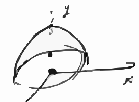
半径为R的匀质半球壳的几何示意图，附带x、y坐标轴
第 4 页 (1) 质点系运动
\[
\frac{d m_i \vec{v}_i}{dt} = \vec{F}_i^{(i)} + \vec{F}_i^{(e)}
\]
\[
\sum_i \frac{d m_i \vec{v}_i}{dt} = \sum_i \vec{F}_i^{(e)} = \vec{F}^{(e)}
\]
即当合外力为0时，
\[
d\left( \sum_i m_i \vec{v}_i \right) = \vec{F}^{(e)} dt
\]
总动量守恒。
动量定理
\[
\vec{P}(t_2) - \vec{P}(t_1) = \int_{t_1}^{t_2} \vec{F}^{(e)} dt
\]
总角动量为 $\sum_i (\vec{r}_i \times m_i \vec{v}_i)$。
对单个质点：
\[
\vec{r}_i \times \left( \vec{F}_i^{(e)} + \vec{F}_i^{(i)} \right) = \vec{r}_i \times \frac{d m_i \dot{\vec{r}}_i}{dt} = \frac{d\left( \vec{r}_i \times m_i \dot{\vec{r}}_i \right)}{dt}
\]
对所有质点求和，内力成对且沿连心线，内力矩相消，
\[
\sum_i \vec{r}_i \times \vec{F}_i^{(e)} = \frac{d \sum_i \vec{r}_i \times m_i \dot{\vec{r}}_i}{dt}
\]
即总角动量为每个质点角动量矢量和：
\[
\vec{J} = \sum_i \vec{r}_i \times m_i \dot{\vec{r}}_i
\]
总力矩为作用在每个质点上的力矩之和：
\[
\vec{M} = \sum_i \vec{r}_i \times \vec{F}_i^{(e)}
\]
角动量定理成立。假定外力对某定点合力矩为0，则$\vec{J}$守恒。
第 5 页 角动量与质心的关系
$\vec{r}_c$ 为质心，$\vec{r}_i$ 为质点 $i$ 的位矢，$\vec{R}_i$ 为质点 $i$ 相对 $\vec{r}_c$ 位置
即 $\vec{R}_i = \vec{r}_i - \vec{r}_c$，$\vec{V}_i = \vec{v}_i - \vec{v}_c$
相对质心的总动量 $\sum_i \vec{P}_i = \sum_i m_i \dot{\vec{R}}_i = \sum_i m_i \dot{\vec{r}}_i - (\sum_i m_i) \dot{\vec{r}}_c = 0$
角动量
\[
\vec{J} = \sum_i m_i (\vec{r}_i \times \vec{v}_i) = \sum_i m_i (\vec{R}_i + \vec{r}_c) \times (\vec{V}_i + \vec{v}_c)
\]
\[
= \sum_i m_i \vec{R}_i \times \vec{V}_i + \sum_i m_i \vec{r}_c \times \vec{v}_c \quad \sum_i m_i \vec{R}_i = 0
\]
\[
+ \sum_i m_i \vec{R}_i \times \vec{v}_c + \sum_i m_i \vec{r}_c \times \vec{V}_i \quad \sum_i m_i \vec{V}_i = 0
\]
\[
= \sum_i m_i \vec{R}_i \times \vec{V}_i + \sum_i m_i \vec{r}_c \times \vec{v}_c
\]
\[
= \vec{J}_c + \vec{J}' \quad \vec{J}' = \sum_i m_i \vec{R}_i \times \vec{V}_i \quad \vec{J}_c = m \vec{r}_c \times \vec{v}_c
\]
即角动量可以写为质心的角动量与相对质心角动量之和
\[
\frac{d\vec{J}}{dt} = \sum_i \vec{r}_i \times \vec{F}_i^{(e)}
\]
\[
\frac{d\vec{J}'}{dt} = \sum_i m_i \vec{R}_i \times \frac{d\vec{V}_i}{dt} = \sum_i \vec{R}_i \times \vec{F}_i^{(e)} = \vec{M}'
\]
质点系对质心的角动量对时间的微商是诸外力对质心的力矩之和
即质点系相对质心的角动量定理
第 6 页 质点运动的定理
\[
\vec{F} = m \vec{a}
\]
(1)
\[
\vec{F} dt = m \frac{d\vec{v}}{dt} dt = d(m\vec{v})
\]
当 $\vec{F} dt = 0$ 时，$m\vec{v} = \vec{C}$ 守恒。
(2)
\[
\vec{r} \times \vec{F} = \vec{r} \times m \frac{d\dot{\vec{r}}}{dt} = m \frac{d}{dt}\left( \vec{r} \times \frac{d\dot{\vec{r}}}{dt} \right) - m \frac{d}{dt}\vec{r} \times \frac{d\vec{r}}{dt}
\]
\[
= \frac{d}{dt}\left( \vec{r} \times m \frac{d\vec{r}}{dt} \right) = \frac{d\vec{J}}{dt}
\]
$\vec{J} = \vec{r} \times m\vec{v}$，当 $\vec{r} \times \vec{F} = 0$ 时，$\vec{J} = \vec{C}$ 守恒。
(3)
\[
\vec{F} \cdot d\vec{r} = m \frac{d\dot{\vec{r}}}{dt} \cdot d\vec{r} = m (d\dot{\vec{r}}) \cdot \dot{\vec{r}} = d\left( \frac{1}{2} m \dot{r}^2 \right)
\]
当 $\vec{F} \cdot d\vec{r} = -\vec{\nabla} V \cdot d\vec{r} = -dV$ 时，
\[
d\left( \frac{1}{2} m v^2 + V \right) = 0 \quad \text{即机械能守恒}
\]
第 7 页 (3) 动能
单个质点：
\[
dW_i = (\vec{F}_i^{(e)} + \vec{F}_i^{(i)}) \cdot d\vec{r}_i = dT_i = d\left(\frac{1}{2} m_i v_i^2\right)
\]
对$i$求和：
\[
dT = \sum_i dT_i = \sum_{i=1}^n (\vec{F}_i^{(e)} \cdot d\vec{r}_i) + \sum_{i=1}^n \vec{F}_i^{(i)} \cdot d\vec{r}_i
\]
动能的微分，等于诸内力及外力所作元功之和。
若我们只看内力作功，由质点1和2构成的系统：
\[
dA^{(i)} = dA_1 + dA_2 = \vec{F}_{1\leftarrow2} \cdot d\vec{r}_1 + \vec{F}_{2\leftarrow1} \cdot d\vec{r}_2
\]
\[
= \vec{F}_{1\leftarrow2} \cdot (d\vec{r}_1 - d\vec{r}_2) = \vec{F}_{1\leftarrow2} \cdot d\vec{r}_{12}
\]
只有当 $\hat{r}_{12} \cdot d\vec{r}_{12}=0$ 时，内力作功为0。
当系统只有保守力作功时，则总机械能保持不变。
动能与质心关系：
\[
T_i = \frac{1}{2} m_i v_i^2 = \frac{1}{2} m_i (\vec{V}_i + \vec{v}_c)^2 = \frac{1}{2} m_i \vec{V}_i^2 + \frac{1}{2} m_i \vec{v}_c^2 + m_i \vec{V}_i \cdot \vec{v}_c
\]
\[
\sum_i T_i = \sum_i \frac{1}{2} m_i \vec{V}_i^2 + \frac{1}{2} \left( \sum_i m_i \right) v_c^2 + \left( \sum_i m_i \vec{V}_i \right) \cdot \vec{v}_c
\]
其中第三项为0，前两项分别为相对质心的动能和质心的动能。
柯尼希定理：质点系的动能 = 质心的动能 + 相对质心的动能。
第 8 页 相对质心的动能。
\[
m_i \frac{d^2 \vec{r}_i}{dt^2} = \vec{F}_i^{(i)} + \vec{F}_i^{(e)}
\]
\[
m_i \frac{d \dot{\vec{r}}_c}{dt} + m_i \frac{d \dot{\vec{R}}_i}{dt}
\]
对$i$求和
\[
\sum_i m_i \frac{d \dot{\vec{r}}_c}{dt} = m \frac{d \dot{\vec{r}}_c}{dt} = \sum_i \vec{F}_i^{(e)}
\]
\[
\sum_i m_i \frac{d \dot{\vec{R}}_i}{dt} = \frac{d}{dt} \sum_i m_i \dot{\vec{R}}_i = 0
\]
动能项
\[
d \vec{R}_i \cdot m_i \frac{d \dot{\vec{R}}_i}{dt} = d \vec{R}_i \cdot \left( \vec{F}_i^{(i)} + \vec{F}_i^{(e)} \right) - \left( m_i \frac{d \dot{\vec{r}}_c}{dt} \right) \cdot d \vec{R}_i
\]
左边为$d \frac{1}{2} m_i \dot{\vec{R}}_i^2$
对$i$求和
\[
d\left( \sum_i \frac{1}{2} m_i \dot{\vec{R}}_i^2 \right) = \sum_i d \vec{R}_i \cdot \vec{F}_i^{(i)} + \sum_i d \vec{R}_i \cdot \vec{F}_i^{(e)} - \left( \sum_i m_i d \vec{R}_i \right) \cdot \frac{d \dot{\vec{r}}_c}{dt}
\]
其中$\left( \sum_i m_i d \vec{R}_i \right) \cdot \frac{d \dot{\vec{r}}_c}{dt} = 0$
即：质点系对质心的动能的微分等于质点系相对质心系位移时内力与外力所做功之和。
第 9 页 例 质量为$m$的两个质点$A,B$，由不可伸长的轻杆相连。静止放在光滑桌面上，杆长为$a$，质点$B$受到与$AB$连线正交水平冲力，冲量为$\vec{I}$，求此后两质点的运动情况。
解：
$A,B$的位矢为
\[
\vec{r}_A = x_A \vec{i} + y_A \vec{j}
\]
\[
\vec{r}_B = x_B \vec{i} + y_B \vec{j}
\]
质心坐标
\[
\vec{r}_c = \frac{\vec{r}_A}{2} + \frac{\vec{r}_B}{2}
\]
根据动量定理
\[
2m \frac{d\vec{r}_c}{dt} = \vec{I} = I \vec{i}
\]
\[
\vec{r}_c(t=0) = \frac{a}{2} \vec{j}
\]
得
\[
\vec{r}_c = \frac{I}{2m} t \vec{i} + \frac{a}{2} \vec{j}
\]
冲击力作用在$B$上，$t=0$时刻
\[
\vec{v}_A(t=0) = 0 \vec{i} + 0 \vec{j}
\]
\[
\vec{v}_c(t=0) = \frac{I}{2m} \vec{i}
\]
可得
\[
\vec{v}_B(t=0) = 2 \vec{v}_c = \frac{I}{m} \vec{i}
\]
相对质心的角动量
\[
\vec{R}_A = \vec{r}_A - \vec{r}_c, \quad \vec{R}_B = \vec{r}_B - \vec{r}_c
\]
\[
\vec{L}' = m \vec{R}_A \times \dot{\vec{R}}_A + m \vec{R}_B \times \dot{\vec{R}}_B
\]
无外力作用，角动量守恒。
$t=0$时
\[
\dot{\vec{R}}_A = -\dot{\vec{r}}_c, \quad \dot{\vec{R}}_B = \dot{\vec{r}}_c
\]
\[
\vec{L}'(t=0) = -\frac{a I}{2} \vec{k}
\]
杆相对质心以角速度$\omega$自转
\[
\vec{L}(t) = -m \frac{a^2}{4} \omega \cdot 2 \vec{k} = -\frac{m}{2} a^2 \omega \vec{k} = \vec{L}'(t=0)
\]
\[
\omega = \frac{I}{m a}
\]
$\vec{R}_A$和$\vec{R}_B$相对质心作匀速圆周运动
\[
\vec{R}_A = -\frac{a}{2} \sin \omega t \vec{i} - \frac{a}{2} \cos \omega t \vec{j}
\]
\[
\vec{R}_B = \frac{a}{2} \sin \omega t \vec{i} + \frac{a}{2} \cos \omega t \vec{j}
\]
\hfill (6)
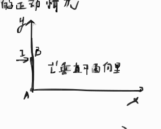
包含x、y坐标系，质点A、B，作用在B点的水平冲量I，以及杆AB的示意图
第 10 页 例
带质量滑轮，匀质，悬挂两质点$m$和$2m$，悬挂绳不滑动，求质点加速度。设滑轮质量为$m$，半径为$R$，转动惯量为$I = \frac{1}{2}mR^2$。
解
系统由3个物体构成，动能为
\[
T = \frac{1}{2}mv^2 + \frac{1}{2}(2m)v^2 + \frac{1}{2}I\omega^2
\]
其中转动惯量和角速度满足
\[
I = \frac{1}{2}mR^2, \quad \omega = \frac{v}{R}
\]
代入动能表达式化简：
\[
T = \frac{1}{2}mv^2 + mv^2 + \frac{1}{4}mv^2 = \frac{7}{4}mv^2
\]
系统的势能为
\[
-2mgd + mgd = -mgd
\]
由能量守恒定律：
\[
\frac{7}{4}mv^2 - mgd = 0 \implies v = \sqrt{\frac{4}{7}gd}
\]
对时间求导得加速度：
\[
\frac{7}{4}m \cdot 2v \dot{v} - mg \dot{d} = 0
\]
注意到$\dot{d} = v$，代入化简得：
\[
\dot{v} = \frac{2}{7}g
\]
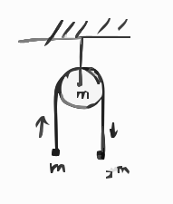
带质量的定滑轮悬挂两个质量分别为m和2m的质点的示意图
第 11 页 例
一个质心以速度 $v_c$ 运动的匀质圆盘，圆盘质量为 $m$，半径为 $a$。圆盘以角速度 $\omega$ 绕过中心点的垂线转动，求圆盘的动能。
解
圆盘密度为 $\rho$，其质量为
\[
m = \int_0^a \int_0^{2\pi} r\rho \, dr d\varphi = \pi a^2 \rho
\]
动能可写为 $T = \underbrace{T_c}_{\text{质心动能}} + \underbrace{T'}_{\text{相对质心转动动能}}$，其中
\[
T_c = \frac{1}{2} m v_c^2
\]
质元质量 $dm = \rho r d\varphi dr$，质元的线速度 $v = \omega \cdot r$，故质元的转动动能为
\[
dT' = \frac{1}{2} \omega^2 r^2 dm
\]
因此
\[
T' = \int dT' = \int_0^a dr \int_0^{2\pi} \rho r \cdot \frac{1}{2} \omega^2 r^2 d\varphi = \frac{\pi \rho a^4 \omega^2}{4}
\]
代入 $\rho = \frac{m}{\pi a^2}$，得
\[
T' = \frac{m a^2 \omega^2}{4}
\]
总动能为
\[
T = \frac{1}{2} m v_c^2 + \frac{1}{4} m a^2 \omega^2
\]
第 12 页 2.5 两体问题
在惯性系中，太阳坐标 $\vec{r}_s$，行星坐标 $\vec{r}_p$，$\vec{r} = \vec{r}_p - \vec{r}_s$
仅受内力，太阳与行星之间的引力
\[
\left\{
\begin{aligned}
M \ddot{\vec{r}}_s &= \frac{G M m}{r^2} \frac{\vec{r}}{r} \\
m \ddot{\vec{r}}_p &= -\frac{G M m}{r^2} \frac{\vec{r}}{r}
\end{aligned}
\right.
\]
\[
\ddot{\vec{r}} = \ddot{\vec{r}}_p - \ddot{\vec{r}}_s = -\frac{G(M+m)}{r^2} \frac{\vec{r}}{r}
\]
即 $m \ddot{\vec{r}} = -\frac{G(M+m) m}{r^2} \frac{\vec{r}}{r}$
若认为太阳不动，其质量由 $M \to M+m$，此时 $k^2 = G(M+m)$ 对不同行星，值不同，所以开普勒第三定律得
\[
\frac{\tau^2}{a^3} = \frac{4\pi^2}{G(M+m)}, \quad \frac{a_1^3}{\tau_1^2} : \frac{a_2^3}{\tau_2^2} = (M+m_1) : (M+m_2)
\]
质量最大行星为木星，$\frac{m_J}{M} \approx \frac{1}{1047}$，其修正约为 $0.0955\%$。
若我们改写
\[
\mu \ddot{\vec{r}} = -\frac{G M m}{r^2} \frac{\vec{r}}{r}, \quad \frac{1}{\mu} = \frac{1}{M} + \frac{1}{m}
\]
$\mu$ 为折合质量，此时可以看做太阳不动，行星绕太阳运动。
第 13 页 26 质心坐标系和实验室系
经典力学中，两坐标系中，质点运行的轨道在形状上相似（相差一个缩放因子），但速度矢量表示不同。
（图：$\theta_r$ 为实验室系下的散射角，$\theta_c$ 为质心系下的散射角）
质点 $m_1$ 以速度 $\vec{v}_1$ 被质点 $m_2$ 散射，散射前后质心都以 $\vec{V}$ 运动。
散射前
\[
(m_1 + m_2)\vec{V} = m_1 \vec{v}_1, \quad \vec{V} = \frac{m_1 \vec{v}_1}{m_1 + m_2}
\]
相对质心
\[
\vec{v}_{1c} = \vec{v}_1 - \vec{V} = \frac{m_2 \vec{v}_1}{m_1 + m_2}, \quad \vec{v}_{2c} = -\vec{V} = -\frac{m_1 \vec{v}_1}{m_1 + m_2}
\]
（质心系下：$m_1$ 以 $\vec{v}_{1c}$ 运动，$m_2$ 以 $\vec{v}_{2c}$ 运动，散射后 $m_1$ 速度 $\vec{v}_{1c}'$，散射角 $\theta_c$；实验室系（$m_2$ 静止系）：$m_1$ 以 $\vec{v}_1$ 运动，散射后 $m_1$ 速度 $\vec{v}_1'$，散射角 $\theta_r$）
散射后 $m_1$：
\[
\vec{v}_1' = \vec{v}_{1c}' + \vec{V}
\]
\[
\begin{cases}
v_{1c}' \cos\theta_c + V = v_1' \cos\theta_r \\
v_{1c}' \sin\theta_c = v_1' \sin\theta_r
\end{cases}
\]
得
\[
\tan\theta_r = \frac{v_{1c}' \sin\theta_c}{v_{1c}' \cos\theta_c + V} = \frac{\sin\theta_c}{\cos\theta_c + \frac{V}{v_{1c}'}}
\]
质心系下，散射前后，两质点速度大小分别与散射前相同
\[
\frac{V}{v_{1c}'} = \frac{V}{v_{1c}} = \frac{m_1}{m_2}
\]
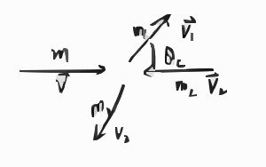
质心系下质点m1和m2散射前后的速度矢量示意图
m2静止系下质点m1和m2散射后的速度矢量示意图
第 14 页 \[
\tan\theta_r = \frac{\sin\theta_c}{\cos\theta_c + \frac{m_1}{m_2}}
\]
\[
\begin{cases}
\text{当} m_1 \ll m_2 & \theta_r \sim \theta_c \\
\text{当} m_1 = m_2 & \theta_r = \frac{\theta_c}{2}
\end{cases}
\]
能量转移
\[
\vec{v}' + \vec{v}_c = \vec{v}_1'
\]
\[
(\vec{v}')^2 = v_1'^2 + v_c^2 - 2 v_c v_1 \cos\theta
\]
质心系动量
\[
\vec{v}_c = \frac{m_1 \vec{v}}{m_1 + m_2} \quad |\vec{v}'| = |\vec{v}_1| = \frac{m_2 v_1}{m_1 + m_2}
\]
能量转移
\[
\left( \frac{(v_1')^2}{v_1^2} \right) - \frac{2 m_1}{m_1 + m_2} \cdot \frac{v_1'}{v_1} \cos\theta_r - \frac{m_2 - m_1}{m_1 + m_2} = 0
\]
(1) 散射过程，实验室系与质心系中动能比较
(2) 散射前：$m_1$具有动能，$m_2$静止
(3) 散射后：$m_1$动能减小，$m_2$动能增加
(4) 当 $m_1 = m_2$ 且 $\theta_r = \frac{\pi}{2}$ 时，能量转移最大。
散射前后状态在很多实验中有重要作用，比如中子发现
1932年 查德威克 $\alpha$粒子轰击铍，铍产生的射线轰击氢、氮，
由于 $\gamma$ 不具有从原子中打出质子的能量，他测量了被打出的氢核、氮核的速度，推算出了新粒子的质量与质子差不多，且是电中性 1935 Nobel
1930年 居里夫人的女儿和女婿 用$\alpha$粒子轰击铍，产生了穿透力很强的射线，他们认为这是电磁波，1931年他们认为电磁波不具备高能量；
中微子 $n \to p^+ + e^- + \bar{\nu}_e$
第 15 页 2.7 变质量物体的运动 交互演示
物体质量不为常数情况，火箭，传送带，雨滴等。
设一物体在$t$时刻质量为$m$，速度是$\vec{v}$，同时一微小质量$\Delta m$以速度$\vec{u}$运动，在$\Delta t$时间内与$m$合并，合前后速度是$\vec{v}+\Delta\vec{v}$，作用在$m$及$\Delta m$上的合外力为$\vec{F}$，由动量定理得：
\[
(m+\Delta m)(\vec{v}+\Delta\vec{v}) - m\vec{v} - \Delta m \vec{u} = \vec{F}\Delta t
\]
只保留一阶小量，得：
\[
\frac{d}{dt}(m\vec{v}) - \frac{dm}{dt}\vec{u} = \vec{F}
\]
若$\vec{u}=0$，则
\[
\frac{d(m\vec{v})}{dt} = \vec{F}
\]
例
已知火箭从静止运动，质量为$m_0$，以$\frac{dm}{dt}$变化率喷射气体，喷出气体的速率为$v_{\text{rel}}$，求火箭的速度。
解
系统只受重力影响。
\[
\frac{d(m\vec{v})}{dt} - \frac{dm}{dt}\vec{u} = m\vec{g}
\]
其中$\vec{u}$为喷射质量的速度，整理得：
\[
m\frac{d\vec{v}}{dt} - \frac{dm}{dt}(\vec{u}-\vec{v}) = m\vec{g}
\]
这里$\vec{u}-\vec{v}$是喷出速度，取向上为正方向，得：
\[
\frac{d\vec{v}}{dt} + \frac{v_{\text{rel}}}{m}\frac{dm}{dt} = -g
\]
\[
v_f = v_0 + v_{\text{rel}} \ln\frac{m_0}{m_f} - gt
\]
使$v_{\text{rel}}$大，且$m_0/m_f$足够大，$v_f$大。
第 16 页 例
有一链条其单位长度质量为$\rho$，上端部分盘着放在平台上，下端部分沿着光滑斜面下滑，求链条沿斜面滑下长度为$x$时链条的速度。
解
取斜面上链条质量为$m$，$m = x\rho$。即将下滑微元$dm = \rho dx$，初始速度为0。
所以
\[
\frac{d}{dt}(m\vec{v}) - \frac{dm}{dt}\vec{u} = \frac{d}{dt}(m\vec{v}) = \vec{F}
\]
沿斜面方向
\[
\frac{dmv}{dt} = mg\sin\alpha = \rho g x \sin\alpha
\]
\[
\frac{dmv}{dt} = \frac{dm}{dt}\dot{x} + m\ddot{x} = \rho \dot{x}^2 + \rho x \ddot{x} = \frac{d}{dt}(\rho \dot{x} x)
\]
得
\[
d(\dot{x} x) = g x \sin\alpha dt = g x^2 \sin\alpha \frac{dx}{x \dot{x}}
\]
初始条件 $x=0$，$\dot{x}=0$
\[
\frac{1}{2} (\dot{x} x)^2 = \frac{g \sin\alpha}{3} x^3 \implies \dot{x}^2 = \frac{2}{3} g x \sin\alpha
\]
链条部分在平台上、部分沿光滑斜面下滑的几何示意图
第 17 页 2.8 位力定理
对于大数目质点系，如$n$个质点，某一个质点质量$m_i$，位矢$\vec{r}_i$，受力$\vec{F}_i$，则
\[
\dot{\vec{P}}_i = \vec{F}_i
\]
研究
\[
G = \sum_{i=1}^n \vec{P}_i \cdot \vec{r}_i
\]
对时间求导
\[
\dot{G} = \sum_{i=1}^n \dot{\vec{P}}_i \cdot \vec{r}_i + \sum_{i=1}^n \vec{P}_i \cdot \dot{\vec{r}}_i = \sum_{i=1}^n \vec{F}_i \cdot \vec{r}_i + 2T
\]
求时间平均
\[
\frac{1}{\tau}(G(\tau) - G(0)) = \frac{1}{\tau}\int_0^\tau dt \dot{G} = \overline{\sum_{i=1}^n \vec{F}_i \cdot \vec{r}_i} + 2\overline{T}
\]
只要位矢$\vec{r}$和动量$\vec{P}$是有限的，时间足够长，则上式左边为零，因此
\[
\overline{T} = -\frac{1}{2}\overline{\sum_{i=1}^n \vec{F}_i \cdot \vec{r}_i}
\]
这就是位力定理。
对保守力系
\[
\overline{T} = +\frac{1}{2}\overline{\sum_{i=1}^n \nabla_i V \cdot \vec{r}_i}
\]
对有心力
\[
\overline{T} = +\frac{1}{2}\overline{\sum_{i=1}^n \frac{\partial V}{\partial r} r}
\]
对万有引力
\[
\overline{T} = -\frac{1}{2}\overline{V_{\text{total}}}
\]
且
\[
\frac{\partial V}{\partial r} r = -V
\]
对一个星系
\[
\overline{V_{\text{total}}} = -\sum_{i>j} \frac{G m_i m_j}{r_{ij}} \sim -\frac{G M^2}{r}
\]
其中$M$为星系质量。
\[
\overline{T} = \frac{1}{2} m \langle v^2 \rangle \approx \frac{3}{2} m \sigma_{\text{1D}}^2
\]
其中$\langle v^2 \rangle = 3 \sigma_{\text{1D}}^2$，$\sigma_{\text{1D}}$为一维速度弥散。即
\[
M \approx \frac{3 R \sigma_{\text{1D}}^2}{G}
\]
后发座超星系团
\[
M = 1.9 \times 10^{15} M_\odot
\]
Coma Cluster可见物质
\[
M = 1.6 \times 10^{14} M_\odot
\]
1933年瑞士天文学家Zwicky首次观测。
第 18 页 例 巨大物体的引力场
解：
dm产生的引力
\[
d\vec{G} = -G M dm \frac{\vec{r}}{r^3}
\]
引力沿$\vec{r}$方向，对O点距离$\rho$的圆环
平均后 $G_y$ 和 $G_z = 0$
\[
dG_x = -\frac{GM x dm}{r^3} = -\frac{G a M dm}{r^3}
\]
此时dm为$\rho \to \rho+d\rho$圆环
内的总质量：
\[
dm = \mu 2\pi \rho d\rho
\]
$\mu$为质量（单位面积的）
\[
dG_x = -G a M \mu 2\pi \rho \frac{d\rho}{r^3}
\]
已知 $r^2 = \rho^2 + d^2$
即 $r dr = \rho d\rho$
\[
dG_x = -\frac{G a M \mu 2\pi}{r^2} dr
\]
\[
G_x = \int_{a}^{\infty} -\frac{G a M \mu 2\pi}{r^2} dr = -\frac{2\pi G \mu a M}{a} = -2\pi G \mu M
\]
此时引力与质点与无穷大平面的距离无关
无穷大平面y-z平面与质点P的引力场示意图，标注了点O、M，垂直距离d，矢量r等元素
第 19 页 球壳势能 解2.
已知球壳半径为 $a$。
$Q$ 点坐标：
\[
(a\cos\phi\sin\theta,\ a\sin\phi\sin\theta,\ a\cos\theta)
\]
$PQ$ 距离：
\begin{align*}
r^2 &= a^2\sin^2\theta + (z - a\cos\theta)^2 \\
&= a^2 + z^2 - 2az\cos\theta
\end{align*}
质量元：
\[
dm = \sigma ds = \sigma a^2 d\phi d\cos\theta = 2\pi\sigma a^2 d\cos\theta
\]
势能元：
\[
dV = -\frac{GM dm}{r} = -\frac{GM \cdot 2\pi\sigma a^2 d\cos\theta}{\sqrt{a^2 + z^2 - 2az\cos\theta}}
\]
总势能：
\[
V = \int_{-1}^1 \frac{-GM \cdot 2\pi\sigma a^2 d\cos\theta}{\sqrt{a^2 + z^2 - 2az\cos\theta}}
\]
球壳质量：
\[
m = \int dm = 2\pi\sigma a^2 \int_{-1}^1 d\cos\theta = 4\pi a^2 \sigma
\]
代入总势能：
\[
V = -\frac{GMm}{2} \int_{-1}^1 \frac{d\cos\theta}{\sqrt{a^2 + z^2 - 2az\cos\theta}} = -(GMm) \begin{cases} \frac{1}{a} & z < a \\ \frac{1}{z} & z \geq a \end{cases}
\]
计算积分：
\begin{align*}
\int_{-1}^1 \frac{dx}{\sqrt{a^2 + z^2 - 2azx}} &= -\frac{1}{az} \sqrt{a^2 + z^2 - 2azx} \bigg|_{-1}^1 \\
&= -\frac{1}{az} \left( \sqrt{(a - z)^2} - \sqrt{(a + z)^2} \right) \\
&= -\frac{1}{az} \left( |a - z| - (a + z) \right) = \begin{cases} \frac{2}{a} & z < a \\ \frac{2}{z} & z > a \end{cases}
\end{align*}
球壳示意图，标注了点P、Q，距离r及角度$\theta$等几何参数
第 20 页 例 2-d 运动。在水平桌上，一个球以速度 $v$ 接近一个静止的同质球，两球弹性碰撞，入射球的速度改变方向，角度为 $\theta$，求二球的末态速度。已知。
解：在 $x,y$ 方向上动量守恒，设 $v_{1f}$ 和 $v_{2f}$ 为末态。
\[
\begin{cases}
mv = m v_{1f} \cos\theta + m v_{2f} \cos\phi \quad \text{(1)} \\
0 = m v_{1f} \sin\theta - m v_{2f} \sin\phi \quad \text{(2)} \\
\frac{1}{2} m v^2 = \frac{1}{2} m v_{1f}^2 + \frac{1}{2} m v_{2f}^2 \quad \text{(3)}
\end{cases}
\]
利用(1)和(2)消去$\phi$：
\[
(mv - m v_{1f} \cos\theta)^2 + m^2 v_{1f}^2 \sin^2\theta = m^2 v_{2f}^2
\]
两边除以$m^2$得：
\[
v^2 - 2 v v_{1f} \cos\theta + v_{1f}^2 = v_{2f}^2
\]
将 $v_{2f}^2$ 代入(3)式：
\[
v^2 - v_{1f}^2 = v^2 - 2 v v_{1f} \cos\theta + v_{1f}^2
\]
整理得：
\[
v_{1f} = v \cos\theta
\]
代入(3)式得：
\[
v_{2f} = v \sin\theta
\]
代入(2)式：
\[
m v \cos\theta \sin\theta = m v_{2f} \sin\phi
\]
将 $v_{2f}=v\sin\theta$ 代入上式：
\[
m v \cos\theta \sin\theta = m v \sin\theta \sin\phi
\]
约去公共项得：
\[
\sin\phi = \cos\theta \implies \phi = \frac{\pi}{2} - \theta
\]
第 21 页 例题解析 PPT 35页 第二章 2.4节，$\boxed{A}\sim\boxed{B}$
\[
m \ddot{x}_1 = k \Delta x = \frac{k x_0}{2} \sin\left( \sqrt{\frac{4k}{3m}} \, t \right)
\]
\[
\ddot{x}_1 = \frac{k x_0}{2m} \sin\left( \sqrt{\frac{4k}{3m}} \, t \right)
\]
\[
\dot{x}_1 = -\frac{k x_0}{2m} \sqrt{\frac{3m}{4k}} \cos\left( \sqrt{\frac{4k}{3m}} \, t \right) + \frac{k x_0}{2m} \sqrt{\frac{3m}{4k}} = \frac{3 x_0}{8} \sqrt{\frac{4k}{3m}} \left( 1 - \cos\left( \sqrt{\frac{4k}{3m}} \, t \right) \right)
\]
\[
x_1 = \frac{3 x_0}{8} \left[ \sqrt{\frac{4k}{3m}} \, t - \sin\left( \sqrt{\frac{4k}{3m}} \, t \right) \right]
\]
\[
dm = 2\pi \rho r \, dr
\]
\[
\pi R^2 \rho = m
\]
\[
dT = \frac12 (dm) r^2 \omega^2 = \pi \rho r^3 \omega^2 \, dr
\]
\[
= 2\pi \rho \cdot \frac{R^4 \omega^2}{4}
\]
\[
= \frac{m R^2 \omega^2}{4}
\]
标注A和B的带波浪线的线段示意图
第 22 页 补充：机械能守恒与参考系
(1) 在非惯性系中，若惯性力不作功或存在与时间无关的有效势，则仍可定义机械能守恒；否则机械能不守恒。
(2) 在某一惯性系中机械能守恒，但在另一惯性系中机械能不一定守恒
首先我们选定两个惯性系$A$，和惯性系$B$。
\[
\vec{v}_B = \vec{v}_A + \Delta \vec{v}
\]
任意速度的变换。
1.
牛顿第二定律，在不同惯性系中都成立
伽利略变换，
\[
\begin{aligned}
\vec{F}_A &\Leftrightarrow \vec{F}_B = \vec{F}_A \\
\vec{v}_A &\Leftrightarrow \vec{v}_B = \vec{v}_A + \Delta \vec{v} \\
\vec{r}_A &\Leftrightarrow \vec{r}_B = \vec{r}_A + \Delta \vec{v} t
\end{aligned}
\]
非惯性系下，$\vec{F} \to \vec{F} + \vec{F}_{\text{惯性力}}$，
\[
\vec{d r} \cdot \vec{F}_{\text{惯性力}} \text{不一定为} 0.
\]
\[
\vec{F}_A = \frac{d m \vec{v}_A}{dt} \implies \vec{F}_B = \frac{d m \vec{v}_B}{dt}
\]
\[
d \vec{v}_B = d \vec{v}_A + d(\Delta \vec{v}) = d \vec{v}_A \quad (\text{常矢量})
\]
2.
动能定理
参考系 $A$：
\[
\vec{F}_A \cdot d \vec{r}_A = m \frac{d \vec{v}_A}{dt} \cdot d \vec{r}_A = m \vec{v}_A \cdot \frac{d \vec{v}_A}{dt} = d\left( \frac{1}{2} m v_A^2 \right)
\]
若变换至参考系$B$.
参考系 $B$：
\[
\vec{F}_B \cdot d \vec{r}_B = \vec{F}_A \cdot d \vec{r}_A + \vec{F}_A \cdot \Delta \vec{v} dt
\]
第 23 页 \[
m \frac{d\vec{v}_B}{dt} \cdot d\vec{r}_B = m \frac{d\vec{v}_A}{dt} \cdot \left( d\vec{r}_A + \Delta \vec{v} dt \right)
\]
\[
= d\left( \frac{1}{2} m v_A^2 \right) + m \Delta \vec{v} \cdot \frac{d\vec{v}_A}{dt} dt
\]
若 $\vec{F}_A \cdot \Delta \vec{v} dt = m \Delta \vec{v} \cdot \frac{d\vec{v}}{dt} dt$ 成立，则B参考系中
\[
\vec{F}_B \cdot d\vec{r}_B = d\left( \frac{1}{2} m v_B^2 \right)
\]
动能定理成立。
3. 机械能守恒
A: $\vec{F}_A = -\vec{\nabla} V_A$ 保守力$\vec{F}_A$可写为势能$V$的梯度
动能定理 $\vec{F}_A \cdot d\vec{r}_A = -(\vec{\nabla} V_A) \cdot d\vec{r}_A = -d V_A = d\left( \frac{1}{2} m v_A^2 \right)$
得 $d\left[ \frac{1}{2} m v_A^2 + V_A \right] = 0$ 即机械能守恒
B: $\vec{F}_A = -\vec{\nabla} V_A$ 则 $\vec{F}_B = -\vec{\nabla} V_B$
$V_B(\vec{r} - \Delta \vec{v} t) = V_A(\vec{r})$ 因$V_A, V_B$描述同一场的势能，相当于平移了坐标
\[
\vec{F}_B \cdot d\vec{r}_B = \vec{F}_A \cdot \left( d\vec{r}_A + \Delta \vec{v} dt \right)
\]
\[
= -d V_A + \left( \vec{F}_A \cdot \Delta \vec{v} \right) dt
\]
\[
d\left( \frac{1}{2} m v_B^2 \right) = d\left( \frac{1}{2} m (\vec{v}_A + \Delta \vec{v})^2 \right) = d\left( \frac{1}{2} m v_A^2 \right) + m \Delta \vec{v} \cdot d\vec{v}_A
\]
所以有 $\vec{F}_A \cdot \Delta \vec{v} dt = d\left[ \frac{1}{2} m v_A^2 + V_A \right] + m \Delta \vec{v} \cdot d\vec{v}_A$
等式显然成立，但保守力做功与伽里略变换的速度有关，即参考系B中机械能不守恒。
第 24 页 第二章 质点系 例题
1. 火箭运动
根据动量守恒
\[
mv = (m+dm)(v+dv) - dm(v-u)
\]
略去二阶小量
\[
mv = m v + m dv + v dm - v dm + u dm
\]
\[
m dv + u dm = 0
\]
\[
dv = -u \frac{dm}{m}
\]
\[
v_2 - v_1 = u \ln \frac{m_1}{m_2}
\]
若$t=0$时 $v_0=0$，质量为$M$，则
\[
v = u \ln \frac{M}{m}
\]
2. 非弹性碰撞 交互演示
一链条长度为$L$，质量密度为$\sigma \ \text{kg/m}$，垂直悬挂在一个秤上，自由下落，求秤上的测量值。
设平面上已落链条的长度为$y$（向下为正），链条受力为$F - \sigma L g$，秤上链条的动量为$\sigma y \dot{y}$
\[
F - \sigma L g = \frac{d(\sigma y \dot{y})}{dt} = \sigma y \ddot{y} + \sigma \dot{y}^2
\]
自由下落的链条，重力加速度等于链条上单个质点的加速度，$\ddot{y} = g$
所以 $\dot{y} = \sqrt{2g y}$
求得
\[
F = \sigma L g + \sigma y g + 2\sigma y g = \sigma L g + 3\sigma y g
\]
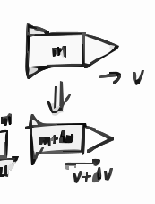
火箭运动示意图，包含火箭主体、喷出部分的质量与速度标注
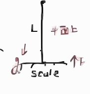
链条下落问题示意图，标注了平面、链条长度L、重力g、秤的支持力F等
第 25 页 第二种解法
$y$ 表示已落长度，向下为正，$dy>0$，速度 $v = \dot{y} > 0$
自由下落的质量变化
\[
dm = \sigma dy = \sigma \dot{y} dt
\]
落在秤面上时，动量改变
\[
dp = 0 - (dm)(-\dot{y}) = \sigma \dot{y}^2 dt
\]
\[
\frac{0 - (dm)(-\dot{y})}{dt\text{之后动量} - dt\text{之前动量}}
\]
\[
F_1 = \frac{dp}{dt} = \sigma \dot{y}^2
\]
\[
F_{\text{总}} = F_{weight} + F_1 = \sigma (L - y)g + 2\sigma (L - y)g = 3\sigma (L - y)g
\]
3. 两球对撞
质量为 $M$，初速度为 $V$，与质点 $m$ 碰撞后，合二为一，求能量损失。
(1) 在实验室系。
(2) 在 $M$ 的静止系。
(1) 根据动量守恒：
\[
MV = (m + M)v'
\]
得碰撞后，速度为 $\frac{M}{m + M}V$
碰后剩余动能为
\[
E_k' = \frac{1}{2}(m + M)v'^2 = \frac{1}{2}\frac{M^2}{m + M}V^2
\]
动能损失为
\[
\Delta E = \frac{1}{2}MV^2 - \frac{1}{2}(m + M)v'^2 = \frac{1}{2}MV^2 - \frac{1}{2}\frac{M^2}{m + M}V^2 = \frac{1}{2}\frac{mM}{m + M}V^2
\]
当 $M \gg m$ 时，$\Delta E \approx \frac{1}{2}mV^2$。损失的能量转化为内能。
(2) 在 $M$ 的静止系。
质点 $m$ 的速度为 $V$，碰撞后，碰后剩余动能为 $\frac{1}{2}(m + M)v_f^2 = \frac{1}{2}(m + M)\frac{m^2}{(m + M)^2}V^2 = \frac{1}{2}\frac{m^2}{m + M}V^2$
\[
\Delta E = \frac{1}{2}mV^2 - \frac{1}{2}\frac{m^2}{m + M}V^2 = \frac{1}{2}\frac{mM}{m + M}V^2
\]
当 $M \gg m$ 时，$\Delta E \approx \frac{1}{2}mV^2$。
第 26 页 4. 质量为$M$的沙子，装在桶内，地面光滑，初始距墙$L$，桶内沙子在距墙$x$处的质量为$m$，且$\frac{dm}{dx}=\frac{M}{L}$。由任一$x$处，受一拉力$T$，如图。
a)
桶内沙子的动能，及其极大值
b)
桶内沙子的动量，及其极大值
解：
a)
$\frac{dm}{dx}=\frac{M}{L}$，$t=0$时 $m_0=M$，$x_0=L$，得 $m=\frac{Mx}{L}$。
根据牛顿第二定律，对于变质量物体，若流出物离开时与物体同速，则运动方程为：
\[
m\frac{dv}{dt} = -T
\]
即
\[
\frac{Mx}{L} v \frac{dv}{dx} = -T
\]
积分得：
\[
-\frac{TL}{M}\int_{L}^{x}\frac{dx'}{x'}=\int_{0}^{v}v'dv'
\]
\[
\frac{1}{2}v^2= -\frac{TL}{M}\ln\frac{x}{L}
\]
能量 $E=\frac{mv^2}{2}=\frac{Mx}{L}\cdot\frac{v^2}{2}= -Tx\ln\frac{x}{L}$。
\[
\frac{dE}{dx}=-T\ln\frac{x}{L} - T
\]
令导数为0，即 $\ln\frac{x}{L}=-1$ 时 $E$ 最大，得
\[
x=Le^{-1}, \quad E=\frac{TL}{e}
\]
b)
速度：
\[
v=\sqrt{-\frac{2TL}{M}\ln\frac{x}{L}}
\]
动量：
\[
p=mv=\frac{Mx}{L}\cdot\sqrt{-\frac{2TL}{M}\ln\frac{x}{L}}=\sqrt{-\frac{2T M x^2}{L}\ln\frac{x}{L}}
\]
对$p^2$求导：
\[
\frac{dp^2}{dx}=-\frac{2TM}{L}\left(2x\ln\frac{x}{L} + x\right)=0
\]
解得 $x=\frac{L}{\sqrt{e}}$，此时
\[
p=\sqrt{\frac{TLM}{e}}
\]
左侧为墙，地面上的桶受向左的拉力T的示意图
第 27 页 5. 同例4，令 $\frac{dm}{dt} = b \dot{x} = b \frac{dx}{dt}$，即 $dm = b dx$。
a)
由 $m(t)$
b)
求 $v(t), x(t)$，及 $v(m), x(m)$。
c)
求动能。
d)
求动量
e)
$b$ 为何值时，$m=0$ 时桶恰好撞到墙？（原稿此句字迹不清，题意待确认）
解：
$dm = b dx$
a)
$T = -m \ddot{x}$，$\frac{dm}{dt} = b \cdot \frac{dx}{dt} = b v$。注意：由这两式不能推出 $m\,dm = bT\,dt$（相差一个速度因子）；原稿此处实际把 $\frac{dm}{dt}$ 写成了 $bT/m$，与题干 $dm/dt=bv$ 不一致。若 $dm=b\,dx$，则 $[b]=M/L$；而 $m^2=M^2-2bTt$ 要求 $[b]=MT/L$，二者不能同时成立。页面结果对应的是 $dm/dt=-bT/m$（$T$ 为恒力、质量流出），不是题干的 $dm/dt=bv$。以下 $m(t),v(t),x(t)$ 均依赖这条未定关系，需先确认模型。
\[ m(t) = \sqrt{M^2 - 2b T t} \]
b)
$T = -m \ddot{x} = - \sqrt{M^2 - 2b T t} \frac{dv}{dt}$，$dm = b dx = b v dt$，
\[ v = \frac{m - M}{b} = \frac{\sqrt{M^2 - 2b T t} - M}{b} \]
\[ x = L + \int v dt = L - \frac{M t}{b} - \frac{(M^2 - 2b T t)^{3/2}}{3 b^2 T} + \frac{M^3}{3 b^2 T} \]
\[ x(m) = L - \frac{(M - m)^2 (M + 2m)}{6 b^2 T} \]
c)
动能为 $\frac{1}{2} m v^2$，
\[ E = \frac{1}{2} m v^2 = \frac{1}{2 b^2} m (m - M)^2 \]
当 $m = \frac{M}{3}$ 时，$E_{\text{max}} = \frac{2 M^3}{27 b^2}$
d)
动量 $p = m v = \frac{1}{b} m (m - M)$，当 $m = \frac{M}{2}$ 时，$|p_{\text{max}}| = \frac{M^2}{4 b}$
e)
$x=0$ 时，$m=0$，
\[ L - \frac{M^3}{6 b^2 T} = 0 \implies b = \sqrt{\frac{M^3}{6 T L}} \]
第 28 页 球壳上，引力势能
我们首先看球壳上的一个圆环（平面垂直于$PO$），对$P$点引力势能的贡献，圆环上的质量，$ds$是圆环的厚度
\[
dm = 2\pi y \mu ds
\]
$ds$表示$P$与球心连线，距$Q$最近点与球心距离$x \to x+dx$时球面长度$ds$，$ds$沿着球面切向在$POQ$平面内
所以
\[
ds = \frac{dx}{\sin\theta}
\]
\[
dm = \frac{2\pi y \mu dx}{\sin\theta} = 2\pi a \mu dx
\]
势能
\[
dV = -\frac{GM dm}{r} = \frac{-GM 2\pi a \mu dx}{r}
\]
\[
r^2 = y^2 + (R-x)^2 = y^2 + x^2 + R^2 - 2Rx = a^2 + R^2 - 2Rx
\]
\[
2r dr = -2R dx \implies \frac{dr}{R} = -\frac{dx}{r}
\]
\[
dV = \frac{-GM \cdot 2\pi a \mu dr}{R}
\]
总势能对应：
\[
V = \int dV = \int_{r_{\text{min}}}^{r_{\text{max}}} \frac{-GM 2\pi a \mu dr}{R}
\]
其中
\[
r_{\text{min}} = R - a, \quad r_{\text{max}} = R + a
\]
\[
= \frac{-GM \cdot 4\pi a^2 \mu}{R} = \frac{-GM m}{R}
\]
球壳与点P的几何示意图，标注了球心O、半径R、a、r及微元ds等
第 29 页 若 P点在球壳内
$r_{\text{min}} = a-R$
$r_{\text{max}} = R+a$
\[
4\pi a^2 \mu = m
\]
\[
V = -\frac{GM \cdot 2\pi a \mu \times 2R}{R} = -\frac{GM m}{a}
\]
球壳的几何示意图，标注了球心O、半径a、P点及距离R
第 30 页 \centering 向心力
对于一个孤立的两体问题，如果不考虑外力，则这个两体问题总可以约化为两个独立的单体问题。我们的出发点还是牛顿定律
\[
\mathbf{F}_{21} = \dot{\mathbf{p}}_1 \tag{1}
\]
\[
\mathbf{F}_{12} = \dot{\mathbf{p}}_2 \tag{2}
\]
两式相加，得到质心运动方程
\[
0 = M \ddot{\mathbf{R}}_c \tag{3}
\]
(1)/$m_1$与(2)/$m_2$相减，得相对运动的方程
\[
\underbrace{\left( \frac{1}{m_1} + \frac{1}{m_2} \right)}_{=1/\mu} \mathbf{F}_{21} = \frac{\mathrm{d}^2}{\mathrm{d}t^2} (\mathbf{r}_1 - \mathbf{r}_2) \tag{4}
\]
这里我们定义了约化质量$\mu^{-1} = m_1^{-1} + m_2^{-1}$。这表明对于一个一般的两体问题，我们可以将其拆为两个单体问题。当然，我们可以从拉格朗日函数直接得到这个结论
\[
L_{\text{2-body}} = \frac{1}{2} m_1 \dot{\mathbf{r}}_1^2 + \frac{1}{2} m_2 \dot{\mathbf{r}}_2^2 - V(|\mathbf{r}_1 - \mathbf{r}_2|) \tag{5}
\]
\[
= \underbrace{\frac{1}{2} M_c \dot{\mathbf{R}}_c^2}_{L_c} + \underbrace{\frac{1}{2} \mu \dot{\mathbf{r}}^2}_{L} - V(|\mathbf{r}|) \tag{6}
\]
其中，$\mathbf{r} = \mathbf{r}_1 - \mathbf{r}_2$。
接下来，让我们对$L$进行研究。为了习惯，我们还是将$\mu$记为$m$，这应该不至于引起歧义。
\[
\boxed{ L = \frac{1}{2} m \dot{\mathbf{r}}^2 - V(r) } \tag{7}
\]
一般讨论
守恒量
由于$L$不含时，能量是守恒量。
\[
E = \frac{1}{2} m \dot{\mathbf{r}}^2 + V(r) \tag{8}
\]
第 31 页 动能为 $T=\frac{1}{2}m\dot{\vec r}^{\,2}$。在无穷小转动 $\vec r\to\vec r+\varepsilon\,\vec n\times\vec r$ 下，速度变为 $\dot{\vec r}\to\dot{\vec r}+\varepsilon\,\vec n\times\dot{\vec r}$，于是
\[
\left(\dot{\vec r}+\varepsilon\,\vec n\times\dot{\vec r}\right)\cdot
\left(\dot{\vec r}+\varepsilon\,\vec n\times\dot{\vec r}\right)
=\dot{\vec r}^{\,2}+\mathcal{O}(\varepsilon^2)
\]
根据转动不变性，角动量
\[
\mathbf{L} = \mathbf{r} \times \mathbf{p} = m\mathbf{r} \times \dot{\mathbf{r}}
\]
也是守恒量。这可以从Noether定理得到，考虑无穷小变换
\[
\mathbf{r} \to \mathbf{r} + \varepsilon \mathbf{n} \times \mathbf{r} \tag{10}
\]
在该变换下，拉格朗日量不变，故守恒量为$\mathbf{p} \cdot (\mathbf{n} \times \mathbf{r}) = \mathbf{n} \cdot \mathbf{L}$。由于$\mathbf{n}$为任意方向，$\mathbf{L}$为守恒量。由于
\[
\mathbf{r} \cdot \mathbf{L} = 0 \quad \frac{\partial L}{\partial \dot{\vec{r}}} \tag{11}
\]
我们可以取$\mathbf{L}$沿着$z$轴，则运动仅局限在$xy$平面内。因此，我们可以取极坐标
\[
L = \frac{1}{2}m(\dot{\rho}^2 + \rho^2 \dot{\varphi}^2) - V(\rho) \tag{12}
\]
由于$\varphi$为可遗坐标，其相应的广义动量$p_\varphi = \partial L/\partial \dot{\varphi} = m\rho^2 \dot{\varphi} = L_z$为守恒量。设$\rho^2 \dot{\varphi} = h$，即$L_z = mh$，拉格朗日为
\[
L = \frac{1}{2}m\left( \dot{\rho}^2 + \frac{h^2}{\rho^2} \right) - V(\rho) \tag{13}
\]
而哈密顿量（能量）为
\[
E = H = \frac{1}{2}m\dot{\rho}^2 + \underbrace{\frac{1}{2}m \frac{h^2}{\rho^2} + V(\rho)}_{V_{\text{eff}}} \tag{14}
\]
2.2 有效势
通过对有效势$V_{\text{eff}}$的分析，即可以得到对运动的整体把握。
通过有效势对$V(\rho) = k\rho^\alpha$下的运动做定性分析。
分析$V(\rho) = k\rho^\alpha$下的圆轨道的稳定性：利用$V'_{\text{eff}} = 0$和$V''_{\text{eff}} > 0$，可解得
\[
k\alpha > 0, \quad \alpha > -2
\]
事实上，这个结论可以由$V_{\text{eff}}$的图直接得到。
对于在圆轨道附近的轨道，可以得到其径向的振动频率由$V_{\text{eff}}$给出：$\omega = \sqrt{V''_{\text{eff}} / m}$。
2.3 时间依赖
一般的，$\rho(t)$可以由积分给出
\[
t - t_0 = \sqrt{\frac{m}{2}} \int_{\rho_0}^{\rho} \frac{d\rho}{\sqrt{E - V_{\text{eff}}}} \tag{15}
\]
在得到$\rho(t)$之后，$\varphi(t)$可以根据关系$\dot{\varphi} = h/\rho^2$给出
\[
\varphi(t) - \varphi_0 = \int_{t_0}^{t} \frac{h dt}{\rho^2(t)} \tag{16}
\]
\centering 2
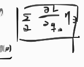
手写的包含求和与偏导表达式的方框
第 32 页 1.
一质点在势场$V(r)=\beta r^2$中运动，证明该质点的运行轨道是椭圆。
解：中心力场中，机械能守恒：
\[
\frac{1}{2}m \dot{r}^2 + \frac{1}{2}m r^2 \dot{\theta}^2 + V(r) = E
\]
其中动能为$\frac{1}{2}m \dot{r}^2 + \frac{1}{2}m r^2 \dot{\theta}^2$，势能为$V(r)$，$E$为常量。
角动量守恒：
\[
L = m r^2 \dot{\theta}
\]
$L$为常量。
将$\dot{\theta} = \frac{L}{m r^2}$代入机械能守恒表达式，得：
\[
\frac{1}{2}m \dot{r}^2 + \frac{L^2}{2 m r^2} + V(r) = E
\]
该式仅为$r$的函数，换元$y = \frac{1}{r^2}$。
由$\dot{r} = \frac{dr}{dt} = \frac{dr}{d\theta} \frac{d\theta}{dt}$，令$y = \frac{1}{r^2}$，则$\dot{r} = \frac{dy}{d\theta} \frac{dr}{dy} \dot{\theta} = -\frac{L r}{2 m} \frac{dy}{d\theta}$，代入上式得：
\[
\left( \frac{1}{2} \frac{dy}{d\theta} \right)^2 = \frac{2 m E}{L^2} y - y^2 - \frac{2 m \beta}{L^2}
\]
整理为：
\[
= - \left( y - \frac{m E}{L^2} \right)^2 - \frac{2 m \beta}{L^2} + \left( \frac{m E}{L^2} \right)^2
\]
令$z = y - \frac{m E}{L^2}$，记$B^2 = \left( \frac{m E}{L^2} \right)^2 - \frac{2 m \beta}{L^2}$，代入得：
\[
\left( \frac{dz}{d\theta} \right)^2 = -4 z^2 + 4 B^2
\]
解得：
\[
z = B \cos\left(2(\theta - \theta_0)\right)
\]
即：
\[
\frac{1}{r^2} = \frac{m E}{L^2} \left( 1 + \varepsilon \cos 2\theta \right)
\]
其中$\varepsilon = \sqrt{1 - \frac{2 \beta L^2}{m E^2}}$，且$\cos 2\theta = \cos^2\theta - \sin^2\theta$，又$r^2 = x^2 + y^2$，故可改写为：
\[
\frac{1}{r^2} = \frac{m E}{L^2} \left( 1 + \varepsilon \left( \frac{x}{r} \right)^2 - \varepsilon \left( \frac{y}{r} \right)^2 \right)
\]
整理后得到椭圆方程：
\[
\frac{x^2}{a^2} + \frac{y^2}{b^2} = 1
\]
其中$a = \sqrt{\frac{k}{1+\varepsilon}}$，$b = \sqrt{\frac{k}{1-\varepsilon}}$，$k = \frac{L^2}{m E}$。
第 33 页 2. 如下图所示，开始时一个半径为$R$的球沿着水平面滑动（无滚动），初始速度为$v_0$，球的转动惯量为$I = \beta m R^2$，（25分）
(a)
求开始纯滚动时球的速度，和球的能量损失
(b)
水平面的摩擦系数为$\mu$，需要多长时间，球开始纯滚动
(c)
证明摩擦力做的功等于球的能量损失
解
摩擦力为$f$。
\[
\begin{cases}
F = ma \\
- F R = I \dot{\omega}
\end{cases}
\]
(a)
即 $ma R + I \dot{\omega} = 0$。
当 $v_f = \omega R$ 时开始纯滚动，对上式积分：
\[
m R (v_f - v_0) + I \frac{v_f}{R} = 0
\]
解得：
\[
v_f = \frac{v_0}{1 + \beta}
\]
动能损失：
\[
\Delta K = \frac{1}{2} m v_0^2 - \left( \frac{1}{2} m v_f^2 + \frac{1}{2} I \omega^2 \right)
\]
其中第一项为质心动能，第二项为相对质心转动动能，代入化简得：
\[
\Delta K = \frac{1}{2} m v_0^2 \frac{\beta}{1 + \beta}
\]
(b)
$F = - \mu m g$，对 $F = ma$ 积分：
\[
\mu m g t = m (v_0 - v_f)
\]
解得：
\[
t = \frac{v_0 - v_f}{\mu g} = \frac{\beta}{1 + \beta} \frac{v_0}{\mu g}
\]
(c)
摩擦力做功为负，其绝对值等于能量损失。滑行距离为质心移动距离减去滚动距离：
\[
d = v_0 t - \frac{1}{2} \mu g t^2 - \frac{1}{2} \frac{\mu m g R^2}{I} t^2
\]
代入 $I = \beta m R^2$，化简得：
\[
d = \frac{1}{2} v_0^2 \frac{\beta}{1 + \beta} \frac{1}{\mu g}
\]
摩擦力做功：
\[
W = -F d = -\frac{1}{2} m v_0^2 \frac{\beta}{1 + \beta}
\]
可见 $|W| = \Delta K$，即摩擦力做的负功的绝对值等于球的能量损失。
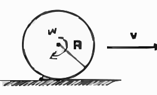
半径为R的球在水平面上滑动的示意图，标注了角速度$\omega$、半径R和水平向右的速度v
第 34 页 3.
匀质杆，长度为$2l$，初始时，如图静止放置在光滑水平面上，并与水平面夹角为$\alpha$，任其在重力下自由运动，求质心运动。
解：设$t$时刻杆与水平面夹角为$\theta$。
机械能守恒：
\[
T + mgl\sin\theta = mgl\sin\alpha
\]
动能分解为质心动能：$T_1 = \frac{1}{2}mv_c^2 = \frac{1}{2}m l^2 \dot{\theta}^2 \cos^2\theta$；转动动能：$T_2 = \frac{1}{2}I\dot{\theta}^2$。
转动惯量：
\[
I = \int_{-l}^{l} dm \, r^2 = \frac{1}{3} m l^2
\]
代入得：
\[
mgl(\sin\alpha - \sin\theta) = \frac{1}{2} m l^2 \dot{\theta}^2 \cos^2\theta + \frac{1}{6} m l^2 \dot{\theta}^2
\]
可得：
\[
\dot{\theta} = -\sqrt{\frac{6g(\sin\alpha - \sin\theta)}{l(1 + 3\cos^2\theta)}}
\]
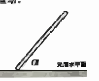
与光滑水平面夹角为$\alpha$的均质杆示意图
第 35 页 4. 两个相同质量的质点用轻绳连接，如下图所示，左边的质点只做竖直方向运动，右边的质点做小角度摆动，摆动幅度$\theta_0 \ll 1$，运用欧拉-拉格朗日方程求解$r$和$\theta$的运动。并求左边质点运动的平均效应。
解:
拉氏量 $L = T - V$。
\[
T = \frac{1}{2} m \dot{r}^2 + \frac{1}{2} m (\dot{r}^2 + r^2 \dot{\theta}^2)
\]
其中第一项为左质点动能，第二项为右质点动能。
\[
V = m g r - m g r \cos\theta
\]
其中第一项为左质点重力势能，第二项为右质点重力势能（取右质点最低点为零势能点）。
因此拉氏量为：
\[
L = \frac{1}{2} m \dot{r}^2 + \frac{1}{2} m (\dot{r}^2 + r^2 \dot{\theta}^2) - m g r + m g r \cos\theta
\]
欧拉-拉格朗日方程为：
\[
\left\{
\begin{aligned}
\frac{\partial L}{\partial r} - \frac{d}{dt} \frac{\partial L}{\partial \dot{r}} &= 0 \\
\frac{\partial L}{\partial \theta} - \frac{d}{dt} \frac{\partial L}{\partial \dot{\theta}} &= 0
\end{aligned}
\right.
\]
计算偏导数后得到运动方程：
\[
\left\{
\begin{aligned}
2 \ddot{r} &= r \dot{\theta}^2 - g (1 - \cos\theta) \\
\frac{d}{dt} (r^2 \dot{\theta}) &= - g r \sin\theta
\end{aligned}
\right.
\]
小角度近似 $\theta \ll 1$，则 $1 - \cos\theta \approx \frac{1}{2} \theta^2$，$\sin\theta \approx \theta$，代入得：
\[
2 \ddot{r} = r \dot{\theta}^2 - \frac{1}{2} g \theta^2
\]
可得 $\ddot{r}$ 是 $\theta$ 的二阶小量。
另外，$\frac{d}{dt}(r^2 \dot{\theta}) = 2 r \dot{r} \dot{\theta} + r^2 \ddot{\theta}$，由于 $\dot{r}$ 是小量，一阶小量项可忽略，因此近似为：
\[
\frac{d}{dt}(r^2 \dot{\theta}) \approx r^2 \ddot{\theta}
\]
代入第二个运动方程得：
\[
\ddot{\theta} + \frac{g}{r} \theta = 0
\]
这是简谐运动，解为：
\[
\theta = \varepsilon \cos(\omega t + \theta_0), \quad \omega = \sqrt{\frac{g}{r}}
\]
其中 $\varepsilon$ 为小摆动幅度。
将 $\theta$ 代入 $\ddot{r}$ 的方程，结合 $\omega^2 = \frac{g}{r}$，得：
\[
2 \ddot{r} = r \cdot \varepsilon^2 \omega^2 \sin^2(\omega t + \theta_0) - \frac{1}{2} g \varepsilon^2 \cos^2(\omega t + \theta_0) = g \varepsilon^2 \sin^2(\omega t + \theta_0) - \frac{1}{2} g \varepsilon^2 \cos^2(\omega t + \theta_0)
\]
对时间求平均，利用周期函数的平均性质 $\langle \sin^2 x \rangle = \langle \cos^2 x \rangle = \frac{1}{2}$，因此：
\[
\langle \ddot{r} \rangle = \frac{1}{2} \left( g \varepsilon^2 \cdot \frac{1}{2} - \frac{1}{2} g \varepsilon^2 \cdot \frac{1}{2} \right) = \frac{g \varepsilon^2}{8}
\]
即左边质点运动的时间平均效应为 $\langle \ddot{r} \rangle = \frac{\varepsilon^2 g}{8}$。
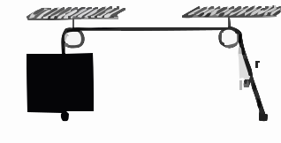
两个定滑轮连接的系统，左侧悬挂方块，右侧质点做小角度摆动的示意图
第 36 页 5.
长为$2l$的匀质棒，一端抵在光滑墙上，而棒身如右图所示斜靠在与墙距为$d$（$d < l \cos\theta$）的光滑棱角上，使用虚功原理，求棒平衡时与水平面所称的角$\theta$。
解：自由度为1，用$\theta$作为广义坐标。主动力只有重力，质心高度用$y_c$表示。
\[
y_c = -d \tan\theta + l \sin\theta
\]
虚位移：
\[
\delta y_c = \left( -\frac{d}{\cos^2\theta} + l \cos\theta \right) \delta \theta
\]
虚功：
\[
\delta W = mg \delta y_c = mg \left( -\frac{d}{\cos^2\theta} + l \cos\theta \right) \delta \theta = 0
\]
得：
\[
-\frac{d}{\cos^2\theta} + l \cos\theta = 0
\]
整理得：
\[
\cos^3\theta = \frac{d}{l}, \quad \theta = \arccos\left( \left( \frac{d}{l} \right)^{\frac{1}{3}} \right)
\]
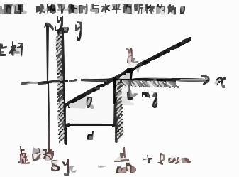
斜靠在光滑墙与棱上的匀质棒的几何受力示意图，含坐标系、距离d、角度$\theta$及重力mg标注
第 37 页
$\vec{r}_c = \frac{\sum m_i \vec{r}_i}{m}, \quad \sum m_i \vec{r}_i = m \vec{r}_c$
\[
\frac{d^2 \sum m_i \vec{r}_i}{dt^2} = \frac{d^2 (m \vec{r}_c)}{dt^2} = \vec{F}^{(e)}
\]
作用于质点系上的合外力等于质点系的总质量与质心加速度乘积。
3. 动量守恒定理 交互演示
当 $\sum_i \vec{F}_i^{(e)} = 0$ 时
\[
\vec{p} = \sum_i m_i \vec{v}_i = m \vec{v}_c = \text{常矢量}
\]
(1) 系统的总动量守恒不意味着各个质点的动量不变
(2) 当外力作用远小于内力作用时，可近似认为系统动量守恒
2.3 角动量定理与角动量守恒定律 交互演示
1. 对固定点$O$的角动量定理 交互演示
\[
m_i \frac{d^2 \vec{r}_i}{dt^2} = \vec{F}_i^{(i)} + \vec{F}_i^{(e)}
\]
\[
\sum_{i=1}^n \vec{r}_i \times m_i \frac{d^2 \vec{r}_i}{dt^2} = \sum_{i=1}^n \left( \vec{r}_i \times \vec{F}_i^{(i)} \right) + \sum_{i=1}^n \left( \vec{r}_i \times \vec{F}_i^{(e)} \right)
\]
因内力成对出现，大小相等，方向相反，且沿两质点连线
\[
\sum_{i=1}^n \left( \vec{r}_i \times \vec{F}_i^{(i)} \right) = 0
\]
\[
\vec{r}_i \times \frac{d^2 \vec{r}_i}{dt^2} = \frac{d}{dt} \left( \vec{r}_i \times \frac{d \vec{r}_i}{dt} \right) - \frac{d \vec{r}_i}{dt} \times \frac{d \vec{r}_i}{dt}
\]
\[
\frac{d}{dt} \sum_{i=1}^n \left( \vec{r}_i \times m_i \frac{d \vec{r}_i}{dt} \right) = \sum_{i=1}^n \left( \vec{r}_i \times \vec{F}_i^{(e)} \right)
\]
$\sum_i \vec{r}_i \times \vec{p}_i$
第 38 页 \[
\frac{d\vec{J}}{dt} = \vec{M}
\]
\[
\vec{J} = \sum_i \vec{J}_i = \sum_i \vec{r}_i \times \vec{p}_i
\]
\[
\vec{M} = \sum_i \vec{m}_i = \sum_i \vec{r}_i \times \vec{F}_i^{(e)}
\]
在直角坐标系
\[
\frac{d}{dt} \sum_{i=1}^n m_i (y_i \dot{z}_i - z_i \dot{y}_i) = \sum_{i=1}^n (y_i F_{iz}^{(e)} - z_i F_{iy}^{(e)})
\]
2. 角动量守恒定律 交互演示
若所有作用在质点系上的外力对某一固定点$O$的合力矩为零。
\[
\frac{d\vec{J}}{dt} = 0 \implies \vec{J} = \text{常矢量}
\]
若对某一通过定点的定轴的力矩为0，$M_x=0$，则
\[
J_x = \sum_i m_i (y_i \dot{z}_i - z_i \dot{y}_i) = C
\]
3. 对质心的角动量定理 交互演示
\[
\vec{R}_i = \vec{r}_i - \vec{r}_c \quad (\text{质心})
\]
\[
\vec{V}_i = \vec{v}_i - \vec{v}_c
\]
\[
\vec{p}_c = \sum m_i \frac{d\vec{r}_i}{dt} = \sum m_i \vec{v}_i
\]
\[
\vec{v}_i = \vec{V}_i + \vec{v}_c
\]
\[
\vec{J} = \sum m_i \vec{r}_i \times \vec{v}_i = \sum m_i (\vec{r}_c + \vec{R}_i) \times \vec{v}_i
\]
\[
= \sum m_i \vec{r}_c \times \vec{v}_i + \sum m_i \vec{R}_i \times (\vec{V}_i + \vec{v}_c)
\]
\[
= \vec{r}_c \times \sum m_i \vec{v}_i + \sum m_i \vec{R}_i \times \vec{v}_c + \sum m_i \vec{R}_i \times \vec{V}_i
\]
\[
= \vec{r}_c \times \vec{p}_c + \left( \sum m_i \vec{R}_i \right) \times \vec{v}_c + \sum m_i \vec{R}_i \times \vec{V}_i
\]
\[
\sum m_i \vec{R}_i = \sum m_i \vec{r}_i - \sum m_i \vec{r}_c = m \left( \frac{\sum m_i \vec{r}_i}{\sum m_i} - \vec{r}_c \right) = 0
\]
\[
\sum m_i \vec{V}_i = \frac{d}{dt} \sum m_i \vec{R}_i = 0
\]
第 39 页 \[
\vec{J} = \vec{r}_c \times \vec{P}_c + \sum_i m_i \vec{R}_i \times \vec{V}_i
\]
\[
\vec{R}_i = \vec{r}_i - \vec{r}_c \quad \vec{V}_i = \vec{v}_i - \vec{v}_c
\]
相对质心运动的位矢与速度
\[
\frac{d\vec{J}}{dt} = \frac{d}{dt} \sum_{i=1}^n \left( \vec{r}_i \times m_i \frac{d\vec{r}_i}{dt} \right) = \underbrace{\sum_{i=1}^n \frac{d\vec{r}_i}{dt} \times m_i \frac{d\vec{r}_i}{dt}}_{=0} + \sum_{i=1}^n \left( \vec{r}_i \times \vec{F}_i^{(e)} \right) = \vec{M}
\]
\[
\frac{d\vec{J}}{dt} = \underbrace{\frac{d\vec{r}_c}{dt} \times \vec{P}_c}_{=0\ (\text{两矢量平行})} + \vec{r}_c \times \frac{d\vec{P}_c}{dt} + \vec{r}_c \times \vec{F}^{(e)} + \frac{d\vec{J}'}{dt}
\]
\[
\frac{d\vec{J}'}{dt} = \sum_i \vec{r}_i \times \vec{F}_i^{(e)} - \vec{r}_c \times \vec{F}^{(e)} = \sum_i \vec{R}_i \times \vec{F}_i^{(e)} = \vec{M}'
\]
质点系对质心C的动量对时间的微商，是诸外力对质心C的力矩之和，即质点系对质心的动量定理。
第 40 页 2.4 动能定理与机械能守恒定律
1. 质点系的动能定理
牛二定律
\[ \frac{d (m_i \vec{v}_i)}{dt} = \vec{F}_i^{(e)} + \vec{F}_i^{(i)} \]
得
\[ d\vec{r}_i \cdot \frac{d (m_i \vec{v}_i)}{dt} = \vec{v}_i \cdot d(m_i \vec{v}_i) = d\left( \frac{1}{2} m_i v_i^2 \right) = d T_i \]
得
\[ dT = \sum_i d T_i = \sum_{i=1}^n \vec{F}_i^{(e)} \cdot d\vec{r}_i + \sum_{i=1}^n \vec{F}_i^{(i)} \cdot d\vec{r}_i \]
动能的微分等于诸内力及外力所作元功之和。
内力作功，质点1和2.
\[ dA = dA_1 + dA_2 = \vec{F}_{1 \leftarrow 2} \cdot d\vec{r}_1 + \vec{F}_{2 \leftarrow 1} \cdot d\vec{r}_2 \]
\[ = \vec{F}_{1 \leftarrow 2} \cdot d(\vec{r}_1 - \vec{r}_2) = \vec{F}_{1 \leftarrow 2} \cdot d\vec{r}_{12} \]
只有当 \( \vec{r}_{12} \cdot d\vec{r}_{12} = 0 \) 时，内力作功为0（例如中心内力且相对距离不变）。
2. 机械能守恒定律
如果一个系统只有保守力作功，非保守内力和一切外力都不作功，那么系统的总机械能保持不变。
(1) 机械能守恒定律通常适用于惯性系；在非惯性系中，若存在与时间无关的有效势，也可得到相应的能量积分。
(2) 在某一惯性系中机械能守恒，在另一惯性系中不一定守恒，这是因为外力的功与参考系有关。
第 41 页 3. 柯尼希定理
以物体的质心做为质原点，并和质心共同运动的坐标系
\[
m\vec{v}_0 = \sum m_i \vec{v}_i
\]
\[
\frac{d m \vec{v}_0}{dt} = m \vec{a}_0 = \sum \vec{F}_i^{(e)}
\]
质点坐标为 $\vec{r}_i = \vec{r}_c + \vec{R}_i$（相对质心）
\[
T_i = \frac{1}{2} m_i (\dot{\vec{r}}_c + \dot{\vec{R}}_i)^2 = \frac{1}{2} m_i \dot{\vec{r}}_c^2 + \frac{1}{2} m_i \dot{\vec{R}}_i^2 + m_i \dot{\vec{r}}_c \cdot \dot{\vec{R}}_i
\]
对质点求和
\[
\begin{split}
T = \sum T_i = \left( \sum_i \frac{1}{2} m_i \right) \dot{\vec{r}}_c^2 + \sum_i \frac{1}{2} m_i \dot{\vec{R}}_i^2 + \dot{\vec{r}}_c \cdot \left( \sum_i m_i \dot{\vec{R}}_i \right) \\
= \frac{1}{2} m \dot{\vec{r}}_c^2 + \frac{1}{2} \sum_i m_i \dot{\vec{R}}_i^2
\end{split}
\]
柯尼希定理：质点组的动能 = 质心的动能 + 相对质心动能
4. 质心系动能定理 交互演示
$\vec{r}_i = \vec{r}_c + \vec{R}_i'$
\[
m_i \frac{d^2 \vec{r}_i}{dt^2} = \vec{F}_i^{(i)} + \vec{F}_i^{(e)} = m_i \frac{d^2 \vec{r}_c}{dt^2} + m_i \frac{d^2 \vec{R}_i}{dt^2}
\]
\[
\sum_i m_i \frac{d^2 \vec{r}_c}{dt^2} = \sum_i \vec{F}_i^{(e)}
\]
可推导出
\[
d\left( \frac{1}{2} \sum_i m_i \dot{\vec{R}}_i^2 \right) = \sum_i \vec{F}_i^{(e)} \cdot d\vec{R}_i + \sum_{i=1}^n \vec{F}_i^{(i)} \cdot d\vec{R}_i
\]
质点系对质心的动能的微分，等于质点系对质心系平移时内力与外力所做元功之和（非惯性系亦成立！）
第 42 页 质点系引力、球体引力场与潮汐力——理论力学练习题
1 例题：球壳定理的积分证明
例题1 (均匀球壳的引力与势). 质量 $M$、半径 $R$ 的均匀球壳，面密度 $\sigma = \dfrac{M}{4\pi R^2}$。求距球心 $r$ 处质点 $m$ 所受的引力 $F(r)$ 及势函数 $\phi(r)$。
解. 以球心 $O$ 到质点 $P$ 的连线为轴，取 $\theta \sim \theta + \mathrm{d}\theta$ 之间的圆环带，其质量与到质点的距离分别为
\[
\mathrm{d}M = \sigma \cdot 2\pi R^2 \sin\theta \, \mathrm{d}\theta, \quad l = \sqrt{R^2 + r^2 - 2Rr\cos\theta}. \tag{1}
\]
由轴对称性，各面元贡献的横向分量相互抵消，合力沿 $OP$ 方向。取指向球心为力的正方向（$F > 0$ 表示吸引），轴向投影因子为 $\dfrac{r - R\cos\theta}{l}$，故
\[
F = 2\pi G m \sigma R^2 \int_{0}^{\pi} \dfrac{(r - R\cos\theta)\sin\theta}{(R^2 + r^2 - 2Rr\cos\theta)^{3/2}} \, \mathrm{d}\theta. \tag{2}
\]
令 $u = \cos\theta$，并利用恒等式
\[
\dfrac{r - R u}{l^3} = \dfrac{1}{2r} \left[ \dfrac{r^2 - R^2}{l^3} + \dfrac{1}{l} \right], \tag{3}
\]
其中定积分公式为
\[
\int_{-1}^{1} \dfrac{\mathrm{d}u}{l} = \begin{cases}
\dfrac{2}{r}, & r > R, \\
\dfrac{2}{R}, & r < R,
\end{cases} \quad
\int_{-1}^{1} \dfrac{\mathrm{d}u}{l^3} = \begin{cases}
\dfrac{2}{r(r^2 - R^2)}, & r > R, \\
\dfrac{2}{R(R^2 - r^2)}, & r < R.
\end{cases} \tag{4}
\]
于是
第 43 页 取 $\phi(\infty)=0$，由径向场强 $g_r = -\frac{\mathrm{d}\phi}{\mathrm{d}r} = -\frac{F}{m}$ 积分得势函数
\[
\phi(r) = \begin{cases}
-\dfrac{GM}{r}, & r \geq R, \\
-\dfrac{GM}{R} = \text{常量}, & r \leq R.
\end{cases}
\tag{5}
\]
注记 1. 球壳内部场强为零，但引力势恒为 $-GM/R$ 而非零，这是常见的易错点：$g = -\nabla\phi = 0$ 只要求 $\phi$ 在球内为常量，并不意味着 $\phi = 0$。
练习题
练习 1 (实心球的场分布与自引力势能). 质量 $M$、半径 $R$ 的均匀实心球。求:
解答. (1) 由球对称性，取半径 $r$ 的同心球面为高斯面，引力场的高斯定理给出
\[
\oint \vec{g} \cdot \mathrm{d}\vec{S} = -4\pi G M_{\text{内}}(r) \implies g \cdot 4\pi r^2 = -4\pi G M_{\text{内}}(r).
\tag{6}
\]
均匀球体的内部质量 $M_{\text{内}}(r) = M \dfrac{r^3}{R^3}$，故
\[
g(r) = \begin{cases}
-\dfrac{GM}{R^3} r, & r < R, \\
-\dfrac{GM}{r^2}, & r > R.
\end{cases}
\tag{7}
\]
（负号表示指向球心。）
注意: 球壳内部场为零，但实心球内部场一般不为零——由上式，内部场强随 $r$ 线性增大，仅球心 $r = 0$ 处为零。切勿把球壳定理的“内部无场”误用到实心球内部（实心球是无穷多壳层叠加，只有 $x > r$ 的外层壳贡献为零）。
(2) 用“逐层堆积”法: 把球体看成由半径 $r$、厚 $\mathrm{d}r$ 的薄球壳从内到外堆积而成。设已有质量 $M(r) = \dfrac{4}{3}\pi \rho r^3$，其对外层壳的势为 $\phi(r) = -GM(r)/r$。每堆积一层增加的势能为
\[
\mathrm{d}U = \phi(r) \mathrm{d}M = -\frac{G \left(\dfrac{4}{3}\pi \rho r^3\right)}{r} \cdot 4\pi \rho r^2 \mathrm{d}r = -\frac{16}{3}\pi^2 G \rho^2 r^4 \mathrm{d}r.
\tag{8}
\]
积分并代入 $\rho = \dfrac{3M}{4\pi R^3}$:
\[
U = -\frac{16}{15}\pi^2 G \rho^2 R^5 = -\frac{3GM^2}{5R}
\tag{9}
\]
第 44 页 2 练习题
练习2 (空腔内的均匀引力场)
密度为 $\rho$ 的均匀球体内挖去一个球形空腔。设大球球心为 $O$、空腔中心为 $C$, $\vec{a} = \overrightarrow{OC}$ ($|\vec{a}| = a$)。证明空腔内的引力场是均匀场，并求其大小与方向。
解答. 用叠加原理，把带空腔的球体看作“完整大球 + 密度为 $-\rho$ 的填充小球”。设待求点相对大球心、空腔中心的位矢分别为 $\vec{r}$、$\vec{r}'$，则
\[
\vec{g}_1 = -\frac{4}{3}\pi G\rho \vec{r}, \quad \vec{g}_2 = +\frac{4}{3}\pi G\rho \vec{r}'. \tag{10}
\]
叠加得
\[
\vec{g} = \vec{g}_1 + \vec{g}_2 = -\frac{4}{3}\pi G\rho (\vec{r} - \vec{r}') = -\frac{4}{3}\pi G\rho \vec{a}, \tag{11}
\]
与待求点位置无关，故为空腔内的均匀场，大小为
\[
g = \frac{4}{3}\pi G\rho a \tag{12}
\]
方向沿两心连线由空腔中心指向大球球心，即与 $\vec{a} = \overrightarrow{OC}$ 反向（空腔内质量分布偏向大球球心一侧，故引力指向 $O$）。
练习3 (泊松方程解法)
用引力势的泊松方程
\[
\nabla^2 \phi = 4\pi G\rho \tag{13}
\]
求解均匀实心球内部的势函数 $\phi(r)$，并验证与球壳叠加法的结果一致。
解答. 均匀球体 $\rho$ 为常量。由球对称性，$\nabla^2 \phi = \frac{1}{r^2}\frac{\mathrm{d}}{\mathrm{d}r}\left(r^2 \frac{\mathrm{d}\phi}{\mathrm{d}r}\right) = 4\pi G\rho$。对 $r$ 积分两次：
\[
r^2 \frac{\mathrm{d}\phi}{\mathrm{d}r} = \frac{4}{3}\pi G\rho r^3 + C_1 \quad \Longrightarrow \quad \frac{\mathrm{d}\phi}{\mathrm{d}r} = \frac{4}{3}\pi G\rho r + \frac{C_1}{r^2}. \tag{14}
\]
由 $r = 0$ 处场强有限，$C_1 = 0$；再积分得
\[
\phi(r) = \frac{2}{3}\pi G\rho r^2 + C_2. \tag{15}
\]
在 $r = R$ 处与外部解 $\phi_{\text{外}}(r) = -\frac{GM}{r}$ 衔接：由 $\left.\frac{\mathrm{d}\phi}{\mathrm{d}r}\right|_R = \frac{GM}{R^2}$ 已自动满足，且
\[
\frac{2}{3}\pi G\rho R^2 + C_2 = -\frac{GM}{R} \quad \Longrightarrow \quad C_2 = -\frac{3GM}{2R}. \tag{16}
\]
代入 $\frac{2}{3}\pi G\rho = \frac{GM}{2R^3}$，得
\[
\phi(r) = -\frac{GM}{2R^3} \left(3R^2 - r^2\right), \quad r \leq R \tag{17}
\]
与球壳叠加法（积分）结果一致：$r = 0$ 处 $\phi = -\frac{3GM}{2R}$，$r = R$ 处给出 $-\frac{GM}{R}$，内部场强 $g = -\frac{\mathrm{d}\phi}{\mathrm{d}r} = -\frac{GM}{R^3} r$，与练习1相同。
第 45 页 3 潮汐力计算
3.1 差动引力与潮汐加速度
物体在引力场中自由下落时，其各部分受到的引力并不相同，真正引起物体形变的是这一差动部分。设参考点（如质心）位于 $\vec{R}$，物体上某点相对参考点的位移为 $\delta\vec{r}$，则该点的潮汐加速度定义为
\[
\delta\vec{g} = \vec{g}(\vec{R} + \delta\vec{r}) - \vec{g}(\vec{R}) \approx (\delta\vec{r} \cdot \nabla) \vec{g}\bigg|_{\vec{R}}, \tag{18}
\]
它只依赖引力场的空间变化率（一阶梯度）。对球对称引力源 $\vec{g}(\vec{r}) = -\frac{GM}{r^3}\vec{r}$，有
\[
\frac{\partial g_i}{\partial x_j} = -\frac{GM}{r^3}\left(\delta_{ij} - 3\frac{x_i x_j}{r^2}\right), \tag{19}
\]
在参考点处记 $\vec{e} = \vec{R}/R$，即得潮汐张量形式的潮汐加速度
\[
\delta\vec{g} = \frac{GM}{R^3}\left[3(\delta\vec{r} \cdot \vec{e})\vec{e} - \delta\vec{r}\right] \tag{20}
\]
其中沿连心方向（$\delta\vec{r} \parallel \vec{e}$）为拉伸，系数 $+2GM/R^3$；垂直方向（$\delta\vec{r} \perp \vec{e}$）为压缩，系数 $-GM/R^3$。相应的潮汐势（忽略相当于整体平动的均匀项）为
\[
\phi_{\text{潮}} = -\frac{GM}{2R^3}\left[3(\delta\vec{r} \cdot \vec{e})^2 - \delta r^2\right], \quad \delta\vec{g} = -\nabla_{\delta\vec{r}} \phi_{\text{潮}}. \tag{21}
\]
例题 2
（潮汐加速度公式的推导）. 从 $\vec{g}(\vec{r}) = -\frac{GM}{r^3}\vec{r}$ 出发，将 $\vec{g}(\vec{R} + \delta\vec{r})$ 对 $\delta\vec{r}$ 作一阶泰勒展开，导出潮汐加速度公式，并讨论径向与横向位移的效应。
解. 写成分量 $g_i = -GM x_i r^{-3}$，对坐标求偏导：
\[
\frac{\partial g_i}{\partial x_j} = -GM\left[\frac{\delta_{ij}}{r^3} + x_i\left(-\frac{3}{r^4}\right)\frac{x_j}{r}\right] = -\frac{GM}{r^3}\left(\delta_{ij} - 3\frac{x_i x_j}{r^2}\right). \tag{22}
\]
在参考点 $\vec{R} = R\vec{e}$ 处取一阶项：
\[
\delta g_i = \frac{\partial g_i}{\partial x_j}\bigg|_{\vec{R}} \delta r_j = -\frac{GM}{R^3}\left[\delta r_i - 3(\delta\vec{r} \cdot \vec{e}) e_i\right] = \frac{GM}{R^3}\left[3(\delta\vec{r} \cdot \vec{e}) e_i - \delta r_i\right], \tag{23}
\]
即 $\delta\vec{g} = \frac{GM}{R^3}\left[3(\delta\vec{r} \cdot \vec{e})\vec{e} - \delta\vec{r}\right]$。
径向：$\delta\vec{r} = \delta s_{\parallel} \vec{e}$，得 $\delta\vec{g} = +\frac{2GM \delta s_{\parallel}}{R^3}\vec{e}$——远离源的一侧被进一步拉远，拉伸；
横向：$\delta\vec{r} \cdot \vec{e} = 0$，得 $\delta\vec{g} = -\frac{GM}{R^3}\delta\vec{r}$——侧向被压缩。
第 46 页 3 潮汐力计算
练习4 (地月潮汐加速度)
. 已知月球质量 $M_m = 7.35 \times 10^{22}\,\text{kg}$, 地月距离 $d = 3.84 \times 10^8\,\text{m}$, 地球半径 $R_E = 6.37 \times 10^6\,\text{m}$。
解答. (1) 取地心为参考点, $\vec{e}$ 为地心指向月球的单位矢量。
\[
\delta\vec{g} = \frac{G M_m}{d^3} \left( 3 R_E \vec{e} - R_E \vec{e} \right) = + \frac{2 G M_m R_E}{d^3} \vec{e},
\]
方向指向月球, 即背离地心；
\[
\delta\vec{g} = \frac{G M_m}{d^3} \left( -3 R_E \vec{e} + R_E \vec{e} \right) = - \frac{2 G M_m R_E}{d^3} \vec{e},
\]
方向背离月球, 同样背离地心。
即正、背两面均被“拉离”地心, 形成沿地月连线的两个潮汐隆起, 这就是潮汐的四极特征。
(2) 代入数值, $G M_m = 6.674 \times 10^{-11} \times 7.35 \times 10^{22} = 4.90 \times 10^{12}\,\text{m}^3/\text{s}^2$, $d^3 = 5.66 \times 10^{25}\,\text{m}^3$:
\[
\frac{2 G M_m R_E}{d^3} = \frac{2 \times 4.90 \times 10^{12} \times 6.37 \times 10^6}{5.66 \times 10^{25}} \approx 1.1 \times 10^{-6}\,\text{m/s}^2,
\]
仅为 $g_0$ 的约 $1.1 \times 10^{-7}$——潮汐力虽小, 却能对海洋等流体产生可观的累积形变。
(3) 潮汐场相对地月连线固定, 地球自转使地面上同一点在一个太阴日(约24.8小时)内依次经过两个隆起区, 故一天出现两次高潮, 间隔约12.4小时。
练习5 (洛希极限)
. 半径为 $r_s$、密度为 $\rho_s$ 的刚性球形小天体, 绕密度为 $\rho_p$、半径为 $R_p$ 的主星做轨道半径为 $d$ 的圆运动(忽略自转)。
解答. (1) 取小天体中心为参考点, $\vec{e}$ 为主星指向小天体的单位矢量, 则正对主星处 $\delta\vec{r} = -r_s \vec{e}$, 潮汐加速度大小为
\[
\delta g = \frac{2 G M_p r_s}{d^3},
\]
第 47 页 方向指向主星（拉伸）。
(2)
小天体表面重力加速度 $a_s = \frac{GM_s}{r_s^2}$。令 $\delta g = a_s$:
\[
\frac{2GM_p r_s}{d^3} = \frac{GM_s}{r_s^2} \implies d^3 = \frac{2M_p r_s^3}{M_s} = \frac{2\rho_p}{\rho_s} R_p^3,
\]
即洛希极限
\[
d_{\text{Roche}} = \left( \frac{2\rho_p}{\rho_s} \right)^{1/3} R_p \tag{24}
\]
数值: 地球 $\rho_p = 5.51 \, \text{g/cm}^3$, 月球 $\rho_s = 3.34 \, \text{g/cm}^3$,
\[
d_{\text{Roche}} = \left( \frac{2 \times 5.51}{3.34} \right)^{1/3} \times 6.37 \times 10^6 \approx 9.5 \times 10^6 \, \text{m} \approx 1.5 R_E.
\]
实际地月距离 $3.84 \times 10^8 \, \text{m} \approx 60 R_E$, 远在洛希极限之外。
注记 2. 对小天体形变不可忽略的流体情形, 洛希极限改为 $d \approx 2.44 (\rho_p/\rho_s)^{1/3} R_p$, 比刚性情形大约 1.94 倍。此外, 太阳潮汐与月球潮汐之比为
\[
\frac{M_\text{日}/d_\text{日}^3}{M_m/d_m^3} \approx 0.46,
\]
朔望时日月潮汐叠加形成大潮, 上下弦时相互削弱形成小潮。
4 编程题: 数值验证球壳定理
练习 6.
数值计算球壳对质点的引力
\[
F(r) = 2\pi G m \sigma R^2 \int_{-1}^{1} \frac{r - R u}{(R^2 + r^2 - 2 R r u)^{3/2}} \mathrm{d}u \tag{25}
\]
与解析结果 $F = GMm/r^2 \ (r > R)$、$F = 0 \ (r < R)$ 比较。
1 import numpy as np
2
3 M = R = m = G = 1.0
4 sigma = M / (4 * np.pi * R**2)
5
6 def simpson(f, a, b, n=2_000_000):
7 x = np.linspace(a, b, n + 1)
8 y = f(x)
9 h = (b - a) / n
10 return h / 3 * (y[0] + y[-1] + 4 * y[1:-1:2].sum() + 2 * y
11 [2:-1:2].sum())
第 48 页 朔望时日月潮汐叠加形成大潮，上下弦时相互削弱形成小潮。
4 编程题：数值验证球壳定理
练习6. 数值计算球壳对质点的引力
\[ F(r) = 2\pi G m \sigma R^2 \int_{-1}^{1} \frac{r - R u}{(R^2 + r^2 - 2 R r u)^{3/2}} \mathrm{d}u, \tag{25} \]
与解析结果 $F = \frac{GMm}{r^2} \ (r > R)$、$F = 0 \ (r < R)$ 比较。
1 import numpy as np
2
3 M = R = m = G = 1.0
4 sigma = M / (4 * np.pi * R**2)
5
6 def simpson(f, a, b, n=2_000_000):
7 x = np.linspace(a, b, n + 1)
8 y = f(x)
9 h = (b - a) / n
10 return h / 3 * (y[0] + y[-1] + 4 * y[1:-1:2].sum() + 2 * y
[2:-1:2].sum())
第 49 页 def F_shell(r):
f = lambda u: (r - R * u) / (R**2 + r**2 - 2 * R * r * u) ** 1.5
return 2 * np.pi * G * m * sigma * R**2 * simpson(f, -1.0, 1.0)
for r in [0.3, 0.9, 0.99, 1.01, 1.1, 2.0, 5.0]:
F_num = F_shell(r)
F_ana = 0.0 if r < 1.0 else 1.0 / r**2
print(f"r={r:5.2f} F_num={F_num:+.8f} F_ana={F_ana:+.8f}")
Listing 1: 球壳引力的数值积分验证 (取 $G = M = m = R = 1$, 仅需 numpy)
注记 3. $r$ 跨越 $R=1$ 时数值结果与解析结果一致: 内部为零, 外部为 $1/r^2$, 即使在 $r \to 1^\pm$ 附近误差也仅约 $10^{-9}$。被积函数在质点贴近球壳时出现尖锐峰 (可积奇点), 需要足够密的网格 (上例用 $N = 2 \times 10^6$ 的 Simpson 法); 若改用粗网格的等距梯形法, 建议先作 $\theta$ 变换再加密取样。
练习 7 (潮汐加速度的数值验证与潮汐隆起). 取 $G = M = R = 1$ 的球对称引力源, 将潮汐加速度的定义式与解析公式比较, 验证相对误差随 $|\delta \vec{r}|/R$ 一阶减小; 并绘制潮汐势与小球自身引力势叠加后的等势线, 观察沿连心方向的两个隆起。
import numpy as np
import matplotlib.pyplot as plt
G = M = R = 1.0
Rvec = np.array([R, 0.0]) # 参考点 (小球中心), 主星在原点
e = Rvec / np.linalg.norm(Rvec)
def g(r): # 主星的精确引力场
r = np.asarray(r, float)
return -G * M * r / np.linalg.norm(r) ** 3
def dg_num(dr): # 按定义求差动加速度
return g(Rvec + dr) - g(Rvec)
def dg_ana(dr): # 潮汐加速度解析公式
dr = np.asarray(dr, float)
return G * M / R**3 * (3 * np.dot(dr, e) * e - dr)
第 50 页 10 变质量运动 交互演示
10.1 从常质量到变质量：问题的提出 交互演示
牛顿第二定律 $m\ddot{\vec{r}} = \vec{F}$ 默认研究对象的质量不变，而自然界与工程中大量过程涉及质量的连续交换：火箭喷射燃气、恒星风、黑洞吸积、雨滴穿过云雾长大、链条落到秤上、砂粒落到传送带上、彗星升华、行星形成中的卵石吸积等。处理这类问题的正确方式，是把主体与被交换的质量一并纳入动量（必要时连同能量）账本，而不是把 $F=ma$ 生搬硬套。
10.2 基本方程（密歇尔斯基方程）
设主体在时刻 $t$ 的质量为 $m(t)$、速度为 $\vec{v}(t)$，在 $[t, t+\mathrm{d}t]$ 内与外界交换质量 $\mathrm{d}m$：$\mathrm{d}m < 0$ 表示喷出质量 $|\mathrm{d}m|$，$\mathrm{d}m > 0$ 表示并入质量 $\mathrm{d}m$；被交换质量相对主体的速度为 $\vec{c}$（火箭排气时 $\vec{c}$ 与 $\vec{v}$ 反向）。以下对两种情形分别清点动量（只计外力 $\vec{F}_{\text{ext}}$）。
并入（$\mathrm{d}m > 0$）：设即将并入的物质在实验室系的速度为 $\vec{u}$。$t$ 时刻总动量为 $m\vec{v} + \mathrm{d}m\,\vec{u}$，$t+\mathrm{d}t$ 时刻合并后为 $(m+\mathrm{d}m)(\vec{v}+\mathrm{d}\vec{v})$，故
\[
m\,\mathrm{d}\vec{v} + \mathrm{d}m\,(\vec{v}-\vec{u}) = \vec{F}_{\text{ext}}\,\mathrm{d}t \implies m\,\mathrm{d}\vec{v} = \vec{F}_{\text{ext}}\,\mathrm{d}t + \mathrm{d}m\,(\vec{u}-\vec{v}),
\]
而 $\vec{u}-\vec{v} = \vec{c}$，恰是被并入物质相对主体的速度。
喷出（$\mathrm{d}m < 0$）：$t$ 时刻总动量为 $m\vec{v}$；$t+\mathrm{d}t$ 时刻主体与喷出物分离，动量分别为 $(m+\mathrm{d}m)(\vec{v}+\mathrm{d}\vec{v})$ 与 $(-\mathrm{d}m)(\vec{v}+\vec{c})$：
\[
(m+\mathrm{d}m)(\vec{v}+\mathrm{d}\vec{v}) + (-\mathrm{d}m)(\vec{v}+\vec{c}) - m\vec{v} = \vec{F}_{\text{ext}}\,\mathrm{d}t \implies m\,\mathrm{d}\vec{v} = \vec{F}_{\text{ext}}\,\mathrm{d}t + \vec{c}\,\mathrm{d}m.
\]
两种情形给出同一个方程（已舍去二阶小量 $\mathrm{d}m\,\mathrm{d}\vec{v}$），即变质量运动基本方程（密歇尔斯基方程，Meshchersky equation）：
\[
\boxed{m\frac{\mathrm{d}\vec{v}}{\mathrm{d}t} = \vec{F}_{\text{ext}} + \dot{m}\,\vec{c}} \tag{24}
\]
其中 $\vec{\Phi} = \dot{m}\,\vec{c}$ 称为反推力。注意约定 $\vec{c}$ 相对主体：对火箭 $\vec{c} = -u\hat{\vec{v}}$（$u>0$ 为相对排气速率），
\[
\vec{\Phi} = (-|\dot{m}|)(-u\hat{\vec{v}}) = |\dot{m}|\,u\hat{\vec{v}},
\]
即反推力向前，与经验一致。
注记 10.1（常见误区）
对变质量主体把外力直接写成 $F_{\text{ext}} = \mathrm{d}(m\vec{v})/\mathrm{d}t$ 是常见错误：$\mathrm{d}(m\vec{v})$ 中含有 $\vec{v}\,\mathrm{d}m$ 一项，它描述的是“随质量进出账本”的动量，而不是主体受到的作用。正确做法始终是对“主体 + 被交换质量”这个质量守恒的复合系统使用动量定理——上面的推导正是如此。直观类比：人站在小车上向后扔沙袋，人车系统获得向前反冲，靠的正是沙袋带走的动量。
第 51 页 10 变质量运动
注记 10.2 (两种等价形式与历史“佯谬”)
. 由 $\mathrm{d}(m \vec{v}) = m \mathrm{d}\vec{v} + \vec{v} \mathrm{d}m$，基本方程严格等价于
\[
\frac{\mathrm{d}(m \vec{v})}{\mathrm{d}t} = \vec{F}_{\text{ext}} + \dot{m} \vec{u}_{\text{abs}}, \quad \vec{u}_{\text{abs}} = \vec{v} + \vec{c}. \tag{25}
\]
两式数学等价，但物理输入不同：$\vec{c}$ 是相对主体的速度（由发动机特性决定，近似恒定），$\vec{u}_{\text{abs}}$ 是实验室系的绝对速度（随主体变化）。历史文献中的“变质量佯谬”多源于把两者混用。
10.3 齐奥尔科夫斯基火箭方程
深空无外力、一维运动、排气相对速率 $u$ 恒定。记质量流率 $\dot{m}_e = -\dot{m} > 0$，密歇尔斯基方程给出
\[
m \frac{\mathrm{d}v}{\mathrm{d}t} = u \dot{m}_e \quad \Longleftrightarrow \quad \mathrm{d}v = u \frac{\mathrm{d}m_e}{m} = -u \frac{\mathrm{d}m}{m}.
\]
全过程质量单调减小、速度单调增大，可直接分离变量并积分：
\[
\int_{0}^{\Delta v} \mathrm{d}v' = -u \int_{m_0}^{m_f} \frac{\mathrm{d}m}{m} = -u \left[ \ln m \right]_{m_0}^{m_f} = u \ln \frac{m_0}{m_f}.
\]
即得齐奥尔科夫斯基公式
\[
\Delta v = u \ln \frac{m_0}{m_f} = v_e \ln \frac{m_0}{m_f} \tag{26}
\]
其中 $v_e = I_{\text{sp}} g_0$ 为有效排气速度。要点：
$\Delta v$ 只依赖质量比的对数与排气速度：质量比 10、$u = 3\,\text{km/s}$（化学推进典型值）给出 $\Delta v \approx 6.9\,\text{km/s}$；
化学推进的 $u$ 受燃烧室温度与排气分子量限制，量级为 $\sqrt{k_B T / (\mu m_p)}$，实际值通常在 $3 \sim 4.5\,\text{km/s}$；
竖直发射（均匀重力）时 $m \dot{v} = -mg + u \dot{m}_e$，积分得 $v(t) = u \ln \frac{m_0}{m(t)} - gt$，第二项为重力损失（实际入轨还含气动损失）；
分级（staging）及时抛掉用尽的干重，避免继续加速死重，是多级火箭提高总 $\Delta v$ 的根本原因。
例题 10.1 (单级与两级火箭)
. 取排气速度 $u = 3.0\,\text{km/s}$。两级火箭：第一级初始质量 $100\,\text{t}$，熄火时 $20\,\text{t}$（其中 $2\,\text{t}$ 为级间结构，分离抛掉）；第二级从 $18\,\text{t}$ 燃烧到 $3.0\,\text{t}$。忽略重力与阻力，求总速度增量，并与“不分离、全部装成一级”的方案比较。
解. 两级：
\[
\Delta v_1 = 3.0 \ln \frac{100}{20} = 3.0 \ln 5 \approx 4.83\,\text{km/s}, \quad \Delta v_2 = 3.0 \ln \frac{18}{3.0} = 3.0 \ln 6 \approx 5.38\,\text{km/s},
\]
总计 $\Delta v \approx 10.2\,\text{km/s}$。若同样的硬件不分离（最终干重 $2 + 3 = 5\,\text{t}$）：
\[
\Delta v' = 3.0 \ln \frac{100}{5} = 3.0 \ln 20 \approx 9.0\,\text{km/s},
\]
分级带来约 $13\%$ 的增益。
第 52 页 10 变质量运动 交互演示
10.4 现代应用实例（一）：电推进与低推力轨道
反推力公式与齐奥尔科夫斯基公式正是现代航天推进的设计基础。下面用真实系统的数字来体会它们。
电推进：用高排气速度换工质
离子/霍尔推力器先用静电场电离氙、氪等重气体，再把离子加速到 $30 \sim 50\,\text{km/s}$ 喷出，对应比冲 $I_{\text{sp}} = u/g_0 \approx 3000 \sim 5000\,\text{s}$，比化学推进高一个数量级；代价是推力很小（$0.1 \sim 0.5\,\text{N}$），只能做“细水长流”式的连续加速。
例题 10.2 (Dawn 探测器的电推进)
Dawn 探测器发射质量约 $1218\,\text{kg}$，其中氙工质 $425\,\text{kg}$（全部用尽后剩余约 $793\,\text{kg}$），排气速度约 $30\,\text{km/s}$。(1) 求氙用尽时的理论速度增量；(2) 若改用化学推进（$u = 3.0\,\text{km/s}$）达到同样的 $\Delta v$，求所需质量比。
解.
(1) $m_0 \approx 1218\,\text{kg}$, $m_f \approx 793\,\text{kg}$,
\[
\Delta v = u \ln \frac{m_0}{m_f} = 30 \ln \frac{1218}{793} \approx 30 \times 0.429 \approx 12.9\,\text{km/s}.
\]
Dawn 实际累计速度增量约 $11\,\text{km/s}$（计入各种损失），先后访问了灶神星与谷神星。(2) 化学推进要求
\[
\frac{m_0}{m_f} = e^{\Delta v / u} = e^{12.9/3.0} \approx 74,
\]
即每 $1\,\text{kg}$ 干重需要 $73\,\text{kg}$ 推进剂——工程上不可实现。这正是深空任务青睐电推进的原因。
低推力螺旋机动
连续切向小推力下，轨道近似保持圆形、半径缓慢变化。由圆轨道能量 $E = -\frac{GMm}{2r}$ 得 $\mathrm{d}E = \frac{GMm}{2r^2} \mathrm{d}r$；又推力做功 $\mathrm{d}E = Fv \mathrm{d}t$，故
\[
F \mathrm{d}t = \frac{GMm}{2r^2 v} \mathrm{d}r \implies \mathrm{d}(\Delta v) = \frac{F}{m} \mathrm{d}t = \frac{GM}{2r^2 v} \mathrm{d}r.
\]
代入 $v = \sqrt{GM/r}$ 并积分：
\[
\Delta v = \int_{r_1}^{r_2} \frac{\sqrt{GM}}{2 r^{3/2}} \mathrm{d}r = \left[ -\sqrt{\frac{GM}{r}} \right]_{r_1}^{r_2} = \sqrt{\frac{GM}{r_1}} - \sqrt{\frac{GM}{r_2}} = v_1 - v_2. \tag{27}
\]
例题 10.3 (从近地轨道到同步轨道的电推进提升)
取 $r_1 = 6678\,\text{km}$, $r_2 = 42164\,\text{km}$, $\mu = GM = 3.986 \times 10^{14}\,\text{m}^3/\text{s}^2$。求螺旋提升所需 $\Delta v$，并与化学推进的霍曼转移比较工质消耗。
第 53 页 10 变质量运动 交互演示
解.
$v_1 = \sqrt{\frac{\mu}{r_1}} \approx 7.73\,\text{km/s}$, $v_2 = \sqrt{\frac{\mu}{r_2}} \approx 3.07\,\text{km/s}$, $\Delta v_{\text{spiral}} = v_1 - v_2 \approx 4.65\,\text{km/s}$,
比霍曼转移（约 $3.9\,\text{km/s}$）略多，但电推进排气速度高一个数量级：以 $u = 30\,\text{km/s}$ 计，所需质量比仅 $\text{e}^{4.65/30} \approx 1.17$；而化学推进（$u = 3.2\,\text{km/s}$）走霍曼转移需要 $\text{e}^{3.9/3.2} \approx 3.4$。
这正是星链卫星用电推进自主升轨的原因；大型同步卫星若追求快速入轨仍常用化学上级，而新一代全电推卫星平台（如 Boeing 702SP）则宁愿花数月螺旋升轨，以换取数倍的有效载荷。
多级火箭与现代运载
把齐奥尔科夫斯基公式逐级应用，$N$ 级火箭的总速度增量为
\[
\Delta v_{\text{total}} = \sum_{k=1}^N u_k \ln \frac{m_{0,k}}{m_{f,k}},
\tag{28}
\]
其中每级只对自己之上的质量负责。现代大型运载（如 Falcon 9、Starship）还把一级回收复用，进一步摊薄成本——但回收所需的减速与着陆要消耗一部分 $\Delta v$ 预算，是“变质量优化”的前沿课题。
10.5 现代应用实例（二）：天体物理中的质量交换
恒星风与行星轨道的外移
太阳每年以太阳风形式失去约 $2 \times 10^{-14} M_\odot$ 的质量，大质量恒星（如沃尔夫-拉叶星）的质量损失率可达 $10^{-5} M_\odot/\text{yr}$ 量级。若质量损失缓慢且各向同性，行星的角动量 $L = m\sqrt{GMr}$（圆轨道）近似守恒，于是
\[
Mr = \text{常量} \implies r \propto \frac{1}{M},
\]
即恒星变轻时行星轨道外移——这是讨论太阳演化到红巨星阶段时地球轨道命运的起点之一。（若质量损失各向异性或伴随物质流带走角动量，结论会改变。）
吸积：从雨滴到黑洞
把雨滴模型放大到天体尺度，就得到吸积过程。以声速 $c_s$ 落入黑洞的 Bondi 吸积率为
\[
\dot{M} = \frac{4\pi \lambda G^2 M^2 \rho}{c_s^3},
\]
其中 $\rho$、$c_s$ 为远处介质的密度与声速，$\lambda \sim 1$ 为量级因子。银河系中心 Sgr A*、X 射线双星与活动星系核都靠吸积发光，其光度上限（爱丁顿限）正是辐射压力与引力平衡的结果——变质量方程在这些系统中以最壮观的方式登场。
第 54 页 10 变质量运动 交互演示
彗星的“火箭效应”
2014--2016年Rosetta任务环绕彗星67P时测得近日点附近 $\dot{m} \sim 1 \sim 10\,\text{kg/s}$ 的升率。喷出的气体给彗核一个微小的反推力（非引力摄动），足以在数十年尺度上改变彗星的公转周期——这是火箭方程在太阳系尺度上的直接演示。
10.6 经典变质量问题 交互演示
例题10.4（雨滴的吸积增长）
雨滴在静止水汽云中下落，单位体积水汽质量 $\rho_m$；雨滴半径 $r$、密度 $\rho_\ell$，扫过的水汽全部被吸收。证明长时间后加速度趋于常数并求其值。
解. 质量增长 $\dot{m} = \rho_m \pi r^2 v$；由 $m = \frac{4}{3}\pi \rho_\ell r^3$ 可写成 $\dot{m} = \beta m^{2/3} v$。水汽静止，故 $\vec{c} = -\vec{v}$，运动方程（向下为正）为
\[
m\dot{v} = mg - \dot{m} v = mg - \beta m^{2/3} v^2.
\]
设长时间后 $v \simeq at$、$m \propto t^n$。由质量方程 $\dot{m}/m = \beta m^{-1/3} v \propto t^{1-n/3}$，与 $\dot{m}/m = n/t$ 比较得 $n = 6$；代入运动方程并除以 $m$：
\[
a = g - \frac{\dot{m}}{m} v = g - na \implies a = \frac{g}{1 + n} = \frac{g}{7} \approx 1.4\,\text{m/s}^2.
\]
注记10.3
结果依赖“扫过即吸收”的几何模型；捕获率或水滴形变不同则系数改变。这类模型在现代云物理与行星形成（卵石吸积）中都有直接对应。
例题10.5（链条落到秤上）
均匀链条线密度 $\lambda$，下端恰好接触秤面，释放后逐节落到秤上并立即静止堆积。当已落下长度 $x$ 时，求秤的读数。
解. 每节链下落距离 $x$，到达秤面时速度 $v = \sqrt{2gx}$。已堆积部分重量 $\lambda g x$；单位时间到达的链条质量 $\lambda v$，在接触瞬间由速度 $v$ 变为零，动量流为
\[
\lambda v \cdot v = \lambda v^2 = 2\lambda g x.
\]
故读数为
\[
F = \lambda g x + \lambda v^2 = 3\lambda g x.
\]
注记10.4
这是理想化结果（接触即静止、无反弹、链节间无张力传递）。真实链条的读数在 $3\lambda g x$ 附近振荡，“落链问题”至今仍是教学与研究话题。它提醒我们：非弹性捕获伴随不可逆的能量耗散，动量与能量必须分别清点。
例题10.6（砂粒落到传送带）
砂粒以速率 $\mu$（$\text{kg/s}$）竖直落到以恒定速度 $v$ 运动的水平传送带上。求传送带所需的水平驱动力与电机功率，并分析能量的去向。
解. 单位时间落到带上的砂粒水平动量由0变为 $\mu v$，故驱动力 $F = \mu v$，功率 $P = Fv = \mu v^2$。砂粒获得的动能率 $\frac{1}{2}\mu v^2$ 只占一半，另一半在非弹性加速的相对滑动摩擦中耗散为热。工业上可用预加速砂粒的方式回收这部分能量。
第 55 页 10.7 含重力的竖直发射（例题）
例题10.7（竖直发射的重力损失）. 火箭排气速度 $u = 3.0\ \text{km/s}$，初始质量 $50\ \text{t}$、燃烧 $120\ \text{s}$ 后剩 $10\ \text{t}$，只计均匀重力 $g = 9.8\ \text{m/s}^2$。求熄火速度，并与无重力时的理想值比较。
解. 竖直向上为正时 $m\dot{v} = -mg + u\dot{m}_e$。把 $u\dot{m}_e/m$ 一项用 $dm_e = -dm$ 改写后分离变量积分：
\[
v = u \ln \frac{m_0}{m_f} - gt.
\]
代入 $u\ln5 \approx 4.83\ \text{km/s}$、$gt = 9.8 \times 120 \approx 1.18\ \text{km/s}$，得
\[
v \approx 4.83 - 1.18 = 3.65\ \text{km/s}.
\]
重力“吃掉”了约 $24\%$ 的速度增量。计入气动与转向损失后，运载火箭的 $\Delta v$ 预算通常比轨道速度多 $1.5 \sim 2\ \text{km/s}$，这正是各航天大国竞相优化发射剖面与推进剂的现实原因。
$\square$
11 位力定理
位力定理（又称维里定理，virial theorem）由克劳修斯于1870年提出（“virial”源自拉丁语 $vis$，力），它把束缚系统的动能时间平均值与势能（力的位力）联系起来，是经典力学中适用范围最广的标度关系之一：从理想气体状态方程、恒星与星系团，到量子力学与冷原子，都有它的身影。
11.1 定义与基本推导
位力（virial）的定义为
\[
G = \sum_{i} \vec{p}_i \cdot \vec{r}_i, \tag{29}
\]
它粗略地度量“系统的尺度与动量之积”。利用 $\dot{\vec{p}}_i = \vec{F}_i$、$\dot{\vec{r}}_i = \vec{v}_i$ 求时间导数：
\[
\frac{\mathrm{d}G}{\mathrm{d}t} = \sum_{i} \vec{F}_i \cdot \vec{r}_i + \sum_{i} m_i \vec{v}_i \cdot \vec{v}_i = \sum_{i} \vec{F}_i \cdot \vec{r}_i + 2T. \tag{30}
\]
对束缚运动，坐标与动量都有界，因而 $G$ 有界；其长时间平均的变化率必为零：
\[
\left\langle \frac{\mathrm{d}G}{\mathrm{d}t} \right\rangle = \lim_{T \to \infty} \frac{G(T) - G(0)}{T} = 0.
\]
于是得到位力定理
\[
\boxed{2\langle T \rangle + \left\langle \sum_{i} \vec{F}_i \cdot \vec{r}_i \right\rangle = 0} \tag{31}
\]
它是一个统计性（时间平均）的结论：瞬时量 $2T + \sum_{i} \vec{F}_i \cdot \vec{r}_i$ 一般并不为零，但对一切束缚系统，其长时平均为零。
第 56 页 11 位力定理
若内力为有心力、总势能 $V$ 是坐标的 $\alpha$ 次齐次函数（把所有坐标放大 $\lambda$ 倍时 $V \to \lambda^\alpha V$，例如引力 $V \propto r^{-1}$ 是 $-1$ 次、谐振子 $V \propto r^2$ 是 $2$ 次），由欧拉齐次函数定理 $\sum_i \vec{r}_i \cdot \nabla_i V = \alpha V$，从而
\[
2\langle T \rangle = \alpha \langle V \rangle. \tag{32}
\]
两个最重要的特例：
例题 11.1（理想气体的状态方程）
用位力定理证明理想气体 $PV = \frac{2}{3}\langle T \rangle$。
解. 理想气体分子间无相互作用，位力全部来自器壁压力。对壁面元 $\mathrm{d}\vec{S}$（外法向），器壁对分子的力为 $-P \mathrm{d}\vec{S}$，故
\[
\left\langle \sum_i \vec{F}_i \cdot \vec{r}_i \right\rangle = -P \oint \vec{r} \cdot \mathrm{d}\vec{S} = -3PV,
\]
其中对闭合曲面用高斯定理 $\oint \vec{r} \cdot \mathrm{d}\vec{S} = \int \nabla \cdot \vec{r} \, \mathrm{d}V = 3V$。代入位力定理即得 $2\langle T \rangle = 3PV$，亦即 $PV = \frac{2}{3}\langle T \rangle = NkT$。
11.2 连续系统、张量形式与负热容
对 $N$ 个质点定义对原点的转动惯量 $I = \sum_i m_i \vec{r}_i^2$。逐次求导：
\[
\dot{I} = 2\sum_i m_i \vec{r}_i \cdot \vec{v}_i, \quad \ddot{I} = 2\sum_i m_i \left( v_i^2 + \vec{r}_i \cdot \vec{a}_i \right) = 4T + 2\sum_i \vec{F}_i \cdot \vec{r}_i.
\]
若系统无外力、内力皆成对且为有心力，则
\[
\sum_i \vec{F}_i \cdot \vec{r}_i = \frac{1}{2}\sum_{i \neq j} \vec{F}_{ij} \cdot (\vec{r}_i - \vec{r}_j) = \sum_{\text{对}} \vec{F}_{ij} \cdot \vec{r}_{ij}.
\]
对引力 $\vec{F}_{ij} = -G m_i m_j \vec{r}_{ij}/r_{ij}^3$，有 $\vec{F}_{ij} \cdot \vec{r}_{ij} = -G m_i m_j / r_{ij} \equiv u_{ij}$，对所有力对求和恰为总引力势能 $\Omega = \sum_{\text{对}} u_{ij}$（负值），于是得到标量位力定理的推广
\[
\boxed{\frac{1}{2}\ddot{I} = 2T + \Omega} \tag{33}
\]
静态或统计平衡时 $\ddot{I} = 0$，即 $2T + \Omega = 0$。此时系统总能量
\[
E = T + \Omega = \frac{1}{2}\Omega = -T < 0,
\]
由此得到著名而反直觉的结论：引力系统的热容为负。恒星辐射能量使 $E$ 更负，而 $E = -T$ 意味着动能在增加——失去能量反而变得更热，这正是主序前恒星收缩升
第 57 页 11 位力定理
温与星团核心坍缩（gravothermal catastrophe）的力学根源。开尔文—亥姆霍兹时标 $t_{\rm KH} \sim |\Omega|/(2L)$（$L$ 为光度）即由此估计。
张量形式 $2T_{ij} + \Omega_{ij} = 0$（Chandrasekhar）把位力定理推广到各向异性系统，是解释椭圆星系形状（旋转压扁与速度各向异性）的经典工具，今天仍是积分场光谱巡天（SDSS/MaNGA、MUSE）分析星系运动学的基础。
11.3 引力系统：恒星、星系团与宇宙学
对束缚引力系统 $2\langle T \rangle = -\langle \Omega \rangle$。若系统近似等温各向同性，$\langle T \rangle = \frac{3}{2} M \sigma_v^2$（$\sigma_v$ 为一维速度弥散），对均匀球 $\Omega = -\frac{3}{5} GM^2/R$，由 $2T + \Omega = 0$ 得位力质量估计：
\[
M = \frac{5\sigma_v^2 R}{G}. \tag{34}
\]
例题 11.2 (Coma 星系团的质量)
Coma 团一维速度弥散 $\sigma_v \approx 1000\ \text{km/s}$，有效半径 $R \approx 1.5\ \text{Mpc}$。估计其质量。
解.
\[
M = \frac{5(10^6)^2 \times 1.5 \times 3.086 \times 10^{22}}{6.674 \times 10^{-11}} \approx 3.5 \times 10^{45}\ \text{kg} \approx 1.7 \times 10^{15} M_\odot.
\]
这是可见光质量的百倍以上。1933年Zwicky正是用同样的方法发现Coma团“缺失质量”，成为暗物质存在的最早证据之一。现代宇宙学把这类估计规范化为球状过密度 $M_{200}$、速度弥散—质量标定，并用于X射线、SZ效应与弱引力透镜的联合测量。
例题 11.3 (天龙座矮星系的暗物质)
天龙座矮星系（Draco）是银河系的暗弱卫星星系：一维速度弥散 $\sigma_v \approx 9\ \text{km/s}$、半光半径 $R \approx 200\ \text{pc}$，可见光光度仅约 $2.4 \times 10^5 L_\odot$。用位力质量估计其质量与质光比。
解.
\[
M = \frac{5\sigma_v^2 R}{G} = \frac{5(9 \times 10^3)^2 \times 200 \times 3.086 \times 10^{16}}{6.674 \times 10^{-11}} \approx 3.8 \times 10^{37}\ \text{kg} \approx 1.9 \times 10^7 M_\odot,
\]
质光比 $M/L \approx 80$（以太阳单位计），远高于恒星系统的典型值 $1 \sim 10$。若改用现代半光半径经验公式 $M_{1/2} \simeq 4\sigma_v^2 R_{1/2}/G$（对任意色散支撑系统都相当准确），得到约 $1.5 \times 10^7 M_\odot$，与均匀球估计同量级。银河系周围的矮星系几乎都是这样“暗”，这是暗物质在星系尺度上的直接证据，也是现代巡天（SDSS、DES、LSST）与高红移星系运动学研究的标准分析方法。
以气体温度表示动能，位力定理给出温度—质量标度关系：
\[
k_B T \approx \frac{GM \mu m_p}{3R},
\]
它是X射线与SZ观测中用星系团温度估计质量的依据（数量级关系，精确系数依赖密度剖面）。在宇宙学中，Layzer-Irvine方程：
\[
\frac{\text{d}}{\text{d}t}(T + \Omega) + \frac{\dot{a}}{a}(2T + \Omega) = 0
\]
第 58 页 11 位力定理 \hfill 27
描述膨胀背景中结构（暗物质质量）的位力化：数值模拟的初始条件常取 $2T/|\Omega|=1$，球坍缩模型给出位力半径 $R_{\text{vir}} \approx R_{\text{ta}}/2$ 与过密度 $\Delta \sim 18\pi^2$。Millennium、IllustrisTNG、FLAMINGO 等大规模 N 体/流体模拟均以位力比作为结构识别与质量定义的核心判据。
11.4 量子与统计物理中的位力定理
对量子定态有 Fock 定理：
\[
2\langle T \rangle = \langle \vec{r} \cdot \nabla V \rangle. \tag{35}
\]
对库仑势得 $2\langle T \rangle = -\langle V \rangle$，与经典结论相同。氢原子基态 $E=-13.6\,\text{eV}$ 可分解为 $\langle T \rangle=13.6\,\text{eV}$、$\langle V \rangle=-27.2\,\text{eV}$——这正是玻尔模型（§8.1）的分解，也说明位力定理早于量子力学就被用于原子尺度估计。
现代应用：
\[
PV = \frac{1}{3}\left(2\langle T \rangle + \left\langle \sum_i \vec{r}_i \cdot \vec{F}_i \right\rangle\right),
\]
这是 LAMMPS、GROMACS 等现代分子模拟软件的默认压力算法。
11.5 解析验证：开普勒轨道的时间平均
位力定理对开普勒轨道可以精确解析验证，无需任何数值计算。设轨道为 $r = \frac{p}{1 + e\cos\theta}$，其中 $p=a(1-e^2)$。由角动量守恒 $L=mr^2\dot{\theta}$，时间元可换成角度元：
\[
dt = \frac{mr^2}{L} d\theta \implies \frac{dt}{r} = \frac{m}{L} r d\theta.
\]
于是
\[
\left\langle \frac{1}{r} \right\rangle = \frac{1}{T} \int_0^T \frac{dt}{r} = \frac{m}{LT} \int_0^{2\pi} r d\theta. \tag{36}
\]
椭圆几何给出周期 $T=2\pi\sqrt{a^3/(GM)}$ 与角动量 $L=m\sqrt{GMa(1-e^2)}$。角度积分为
\[
\int_0^{2\pi} r d\theta = p \int_0^{2\pi} \frac{d\theta}{1 + e\cos\theta} = \frac{2\pi p}{\sqrt{1 - e^2}} = 2\pi a\sqrt{1 - e^2} = 2\pi b,
\]
第 59 页 其中 $b = a\sqrt{1 - e^2}$ 为半短轴（中间的积分可用 $\tan(\theta/2)$ 换元求得）。三式联立：
\[
\left\langle \frac{1}{r} \right\rangle = \frac{m \cdot 2\pi b}{m\sqrt{GMa(1 - e^2)} \cdot 2\pi \sqrt{a^3/(GM)}} = \frac{b}{a^2\sqrt{1 - e^2}} = \frac{1}{a}.
\]
因此势能时间平均为
\[
\langle V \rangle = -GMm \left\langle \frac{1}{r} \right\rangle = -\frac{GMm}{a},
\]
又轨道能量 $E = -\frac{GMm}{2a}$ 守恒，故
\[
\langle T \rangle = E - \langle V \rangle = -\frac{GMm}{2a} + \frac{GMm}{a} = \frac{GMm}{2a},
\]
任一周期上都有
\[
2\langle T \rangle + \langle V \rangle = \frac{GMm}{a} - \frac{GMm}{a} = 0, \tag{37}
\]
位力定理得证——而且结果与偏心率 $e$ 完全无关：无论轨道多扁，动能与势能的时间平均都只由半长轴决定。
注记 11.1. 这个解析结果可作为判断数值计算的标尺：取 $GM = m = a = 1$、$e = 0.6$ 做辛积分，会得到 $\langle T \rangle \approx 0.500$、$\langle V \rangle \approx -1.000$、$2\langle T \rangle + \langle V \rangle \approx 0$，与上面的解析值一致。注意必须对时间取平均：瞬时量 $2T + V = E + T$ 随轨道周期性起伏，并不为零。$N$ 体宇宙学模拟中，同样的位力比 $2T/|\Omega|$ 是判断系统是否达到平衡的标准诊断量。
12 习题与思考题
12.1 基础题
第 60 页 12 习题与思考题
12.2 提高题
1.
证明拉普拉斯—龙格—楞次矢量守恒，并由其方向导出轨道方程。
2.
讨论有心力 $F=-k/r^n$ 中近圆轨道的小振动频率，并求轨道进动角。
3.
计算水星近日点的相对论进动率，并与观测值比较。
4.
计算太阳-木星系统质心位置，并估算太阳径向速度摆动幅度。
5.
证明准圆低推力螺旋机动的总速度增量为 $\Delta v = \sqrt{GM/r_1} - \sqrt{GM/r_2}$，并用它估算从 $6678\ \text{km}$ 提升到 $42164\ \text{km}$ 所需的速度增量（与霍曼转移比较）。
6.
雨滴在静止水汽中下落、扫过即吸收。证明长期加速度趋于 $g/7$，并讨论结论对捕获模型的依赖性。
7.
用位力定理证明理想气体 $PV = \frac{2}{3}\langle T \rangle$，并由此导出 $PV = NkT$。
8.
用位力定理估计星系团质量：取 $\sigma_v = 800\ \text{km/s}$、$R=2\ \text{Mpc}$，求 $M$，并讨论与可见光质量的差异。
12.3 编程题
1.
用辛积分器模拟行星椭圆轨道，验证能量长期守恒，并与欧拉法比较。
2.
模拟限制性三体问题，观察混沌轨道与拉格朗日点附近的稳定轨道。
3.
建立太阳风动压模型，估算日球层顶半径，并绘制动压随距离衰减曲线。
4.
模拟黑洞ISCO内外的圆轨道，观察 $r < 6GM/c^2$ 时轨道的不稳定性。
5.
数值积分含重力的变质量火箭方程，与解析解 $v = u\ln(m_0/m) - gt$ 比对，并研究分级方案的 $\Delta v$ 增益。
6.
数值积分开普勒轨道，验证时间平均满足 $2\langle T \rangle + \langle V \rangle = 0$（取 $e=0,0.3,0.6,0.9$ 对比）。
本页由手写扫描 OCR 后重排；公式用 MathJax 本地渲染，图为 TikZ/矢量 SVG。原扫描仅作校对底稿，不再作为站点阅读形式。